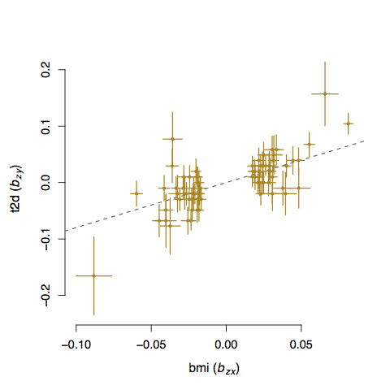

Overview
About
GCTA (Genome-wide Complex Trait Analysis) was originally designed to estimate the proportion of phenotypic variance explained by all genome-wide SNPs for complex traits (the GREML method), and has subsequently extended for many other analyses to better understand the genetic architecture of complex traits. GCTA currently supports the following analyses.
- GRM: estimating the genetic relationships among individuals in GWAS data;
- Estimating the inbreeding coefficients of individuals in GWAS data;
- GREML: estimating the proportion of variance in a phenotype explained by all GWAS SNPs (i.e. the SNP-based heritability);
- Partitioning the genetic variance onto individual chromosomes, MAF bins or functional categories;
- Estimating the genetic variance attributed to the X chromosome, and testing for the effect of dosage compensation;
- GREMLd: estimating the dominance variance in unrelated individuals using GWAS data;
- Bivariate GREML: estimating the genetic correlation between two traits (diseases) using GWAS data;
- PCA analysis and estimation of Fst in GWAS data;
- Computing LD scores and searching for LD friends for a list of target SNPs;
- Simulating a phenotype based on GWAS data;
- Conditional & joint (COJO) analysis of GWAS summary statistics without individual-level genotype data;
- mtCOJO: multi-trait-based conditional & joint analysis using GWAS summary data;
- GSMR: generalised summary-data-based mendelian randomisaion;
- MLMA and MLMA-LOCO: mixed linear model association analysis;
- fastBAT: gene- or set-based association analysis;
- sBLUP: sumamry-data based BLUP analysis for genomic risk prediction;
- Haseman-Elston regression to estimate the the SNP-based heritability for a trait and the genetic correlation between two traits.
Latest release v1.91.4beta, click to download or view update log (17 Apr 2018)
Credits
Jian Yang developed the original version of the software with supports from Peter Visscher, Mike Goddard and Hong Lee.
Zhili Zheng rewrote the I/O and GRM modules, improved the GREML and bivariate GREML modules, extended the GCTA-PCA module, improved the SBLUP module, developed the website, and is currently maintaining the software.
Zhihong Zhu developed the GCTA-mtCOJO, GCTA-GSMR module and improved the GCTA-COJO module.
Jian Zeng rewrote the GCTA-HEreg module.
Andrew Bakshi contributed to the GCTA-fastBAT module.
Robert Maier improved the GCTA-SBLUP module.
Questions and Help Requests
If you have any bug reports or questions please send an email to Jian Yang at jian.yang@uq.edu.au
Citations
Software tool:
Yang J, Lee SH, Goddard ME and Visscher PM. GCTA: a tool for Genome-wide Complex Trait Analysis. Am J Hum Genet. 2011 Jan 88(1): 76-82. [PubMed ID: 21167468]
Method for estimating the variance explained by all SNPs (GREML method) with its application in human height:
Yang J, Benyamin B, McEvoy BP, Gordon S, Henders AK, Nyholt DR, Madden PA, Heath AC, Martin NG, Montgomery GW, Goddard ME, Visscher PM. Common SNPs explain a large proportion of the heritability for human height. Nat Genet. 2010 Jul 42(7): 565-9. [PubMed ID: 20562875]
GREML method being extended for case-control design with its application to the WTCCC data:
Lee SH, Wray NR, Goddard ME and Visscher PM. Estimating Missing Heritability for Disease from Genome-wide Association Studies. Am J Hum Genet. 2011 Mar 88(3): 294-305. [PubMed ID: 21376301]
Extension of GREML method to partition the genetic variance into individual chromosomes and genomic segments with its applications in height, BMI, vWF and QT interval:
Yang J, Manolio TA, Pasquale LR, Boerwinkle E, Caporaso N, Cunningham JM, de Andrade M, Feenstra B, Feingold E, Hayes MG, Hill WG, Landi MT, Alonso A, Lettre G, Lin P, Ling H, Lowe W, Mathias RA, Melbye M, Pugh E, Cornelis MC, Weir BS, Goddard ME, Visscher PM: Genome partitioning of genetic variation for complex traits using common SNPs. Nat Genet. 2011 Jun 43(6): 519-525. [PubMed ID: 21552263]
Method for conditional and joint analysis using summary statistics from GWAS with its application to the GIANT meta-analysis data for height and BMI:
Yang J, Ferreira T, Morris AP, Medland SE; Genetic Investigation of ANthropometric Traits (GIANT) Consortium; DIAbetes Genetics Replication And Meta-analysis (DIAGRAM) Consortium, Madden PA, Heath AC, Martin NG, Montgomery GW, Weedon MN, Loos RJ, Frayling TM, McCarthy MI, Hirschhorn JN, Goddard ME, Visscher PM (2012) Conditional and joint multiple-SNP analysis of GWAS summary statistics identifies additional variants influencing complex traits. Nat Genet 44(4):369-375. [PubMed ID: 22426310]
Bivariate GREML method:
Lee SH, Yang J, Goddard ME, Visscher PM Wray NR (2012) Estimation of pleiotropy between complex diseases using SNP-derived genomic relationships and restricted maximum likelihood. Bioinformatics. 2012 Oct 28(19): 2540-2542. [PubMed ID: 22843982]
Mixed linear model based association analysis:
Yang J, Zaitlen NA, Goddard ME, Visscher PM and Price AL (2013) Mixed model association methods: advantages and pitfalls. Nat Genet. 2014 Feb;46(2):100-6. [Pubmed ID: 24473328]
GREML-LDMS method and LD-score calculation:
Yang et al. (2015) Genetic variance estimation with imputed variants finds negligible missing heritability for human height and body mass index. Nat Genet, doi: 10.1038/ng.3390.[PMID: 26323059]
Method to search for LD friends:
Yang et al. (2011) Genomic inflation factors under polygenic inheritance. Eur J Hum Genet. 19(7): 807-812. [Pubmed ID: 21407268]
fastBAT method:
Bakshi A., Zhu Z., Vinkhuyzen A.A.E., Hill W.D., McRae A.F., Visscher P.M., and Yang J. (2016). Fast set-based association analysis using summary data from GWAS identifies novel gene loci for human complex traits. Scientific Reports 6, 32894. [PMID: 27604177]
mtCOJO and GSMR methods:
Zhu, Z. et al. (2018) Causal associations between risk factors and common diseases inferred from GWAS summary data. Nat. Commun. 9, 224.
Last update: 17 Apr 2018
Download
Executable Files
The executable files below only support a 64-bit operating system on the x86_64 CPU platform.
Note: the latest Linux version of GCTA (v1.91.4) uses the shared library glibc (version >= 2.6) which might need to be installed manually in some Linux systems (e.g. alpine). If your Linux system is more than 10 years old, you may have issues with this library (e.g. GLIBC_xxx not found). If you encounter this problem, you can either upgrade your Linux to one of the recent versions, or email us to request a specific version of GCTA for your system.
Linux gcta_1.91.4beta.zip
Windows gcta_1.91.4beta_win.zip
The executable files are released under the MIT license. We recommend to use the Linux version because the Windows and Mac versions have not been fully tested.
Note: GCTA 1.91.4 is a beta version under testing. We have fixed a few bugs in the previous versions. If you find any bug in tihs version, please report it to Jian Yang at jian.yang@uq.edu.au.
Source code
The source code are released under GPL v3. The source code of the latest version will be released when it is stable.
Update log
Version 1.91.4beta (17 Apr 2018)
- Fixed a bug in GSMR when there are multiple outcome variables.
- Fixed a bug in COJO when the standard error is extremely small.
- Improved the speed and memory usage of --make-grm-xchr, and added an option --make-grm-xchr-part to reduce the memory usage further.
- Added --mbfile in GRM functions to proceed genotypes stored in multiple PLINK files.
- Updated the options --update-sex, --update-ref-allele and --update-freq to be compatible with the new GRM functions.
- Fixed a bug of reporting "Illegal instruction" error for old CPUs (earlier than 2009).
- Added an additional option --threads to specify the number of threads (the same as --thread-num). The number of threads will be obtained from standard OpenMP environment variable OMP_NUM_THREADS if --thread-num or --threads is not specified.
Version 1.91.3beta (14 Mar 2018)
- Speeded up dominance GRM and added a flag --make-grm-d-part to partition the computation.
- Fixed a bug in REML, REML bivar, MLMA and LD when the number of threads (specified by --thread-num) is larger than 1.
- Redirected the log output to both screen and .log file.
- Fixed a bug in COJO for the X chromosome when there is no gender information in the .fam file.
- Fixed a bug in mtCOJO.
- Added a flag (--effect-plot) in GSMR for visualization.
Version 1.91.2beta (2 Feb 2018)
- Added a new module GSMR.
- Added a flag (--mbfile) to read multiple PLINK binary files for GSMR and mtCOJO.
- Fixed a bug in SBLUP, and improved the speed by 40%.
- Fixed a bug in MLMA when dealing with the individuals' ID.
- Fixed unreadable characters in the output of some computer clusters.
Version 1.91.1beta (25 Nov 2017)
- Fixed a bug in --mtcojo.
- Fixed a memory issue in REML analysis and improved the speed by 3 times in the Linux version.
- Changed to use the shared library glibc avoid segmentation fault in higher versions of Linux kernel.
Version 1.91.0beta (21 Oct 2017)
- Added a new module mtCOJO
- Fixed an issue of file path in the Windows version
Version 1.90.2beta (24 Sep 2017)
- Fixed a bug in --mlma-loco with the --mlma-no-adj-covar option.
- Fixed a bug in --make-grm-part when the sample size of one partition is larger than 69K.
- Fixed the performance issue in reading the PLINK .fam file.
- Fixed an issue with --autosome-num.
- Removed the VC++ runtime dependency in the Windows version.
Version 1.90.1beta (13 Sep 2017)
- Fixed a bug in estimating allele frequency in some occasions.
- Fixed a bug in computing a GRM occasionally in small sample.
- Fixed an issue in computing a GRM including rare variants.
- Fixed an issue to run Linux binary in the Linux subsystem on Windows 10.
- Fixed a memory issue in the Windows version.
- Removed --grm-no-relative and added --grm-singleton to get singleton subjects from a sample.
- Fixed a memory issue in --make-bK.
Version 1.90.0beta (8 Aug 2017)
- Improved the speed and memory usage of GRM computation by orders of magnitude.
- Added a new option --make-grm-part to partition the GRM computation into a large of parts to facilitate the analysis in large data set such as the UK Biobank.
- Improved the memory usage of the --grm-cutoff option.
- Added the --grm-no-relative option to extract the GRM of a subset of individuals who do not have any close relative in the sample.
- Improved the speed and memory usage of --freq by orders of magnitude.
- Improved the approximation accuracy of the COJO analysis.
- Added an option --cojo-sblup to perform a summary-data-based BLUP prediction analysis.
- Added the Haseman-Elston regression analysis to estimate the SNP-based heritability for a trait and genetic correlation between traits.
- Improved the speed of the bivariate GREML analysis (5X faster than original version).
- Added the Mac and Windows versions.
- Update the package dependencies to the latest, such as Intel MKL and Eigen. This improved the performance by ~40%.
- Fixed the memory issue when the sample size exceeds 500K in some functions (e.g. bivariate GREML and reading the GRM in gz format).
Version 1.26.0 (22 June 2016)
Download link: gcta_1.26.0.zip
- Fixed a bug in MLMA.
- Added a new module (GCTA-fastBAT) for a set- or gene-based association analysis using GWAS summary data.
Version 1.25.3 (27 April 2016)
Download link: gcta_1.25.3.zip
- Fixed a memory leaking issue in --mlma
Version 1.25.2 (22 Dec 2015)
Download link: gcta_1.25.2.zip
- A much more memory-efficient version of MLMA.
- Added a new option (--mlma-subtract-grm) for MLMA-LOCO with large data sets.
- Fst calculation has been changed to that based on a random model. The previous version was based on a fixed model. The difference is trivial for small Fst values but the random model has a good property that Fst is bounded at 1 for the most extreme allele frequency difference.
- Added a new option (--make-grm-inbred) to compute GRM for an inbred population (e.g. inbred mice or crops).
- Added a new option (--recode-std) to output standardised SNP genotypes.
Version 1.25.1 (8 Dec 2015)
Download link: gcta_1.25.1.zip
- Added an option --reml-bendV
Version 1.25.0 (30 Oct 2015)
Download link: gcta_1.25.0.zip
- Fixed a bug in --imp-rsq
- Added an option to calculate an unbiased estimate of LD score for LDSC regression analysis (see gcta.freeforums.net/thread/177/gcta-lds-calculating-score-snp); Added an option to calculate multi-component LD score following Finucane et al. (2015 Nat Genet).
- Added options to extract or exclude a region.
- Add the --reml-bivar-no-constrain option to the bivariate GREML analysis.
- Add an option to select a fixed number of top associated SNPs (taking LD into account) from GWAS.
- We have implemented the Zaitlen et al. method in GCTA which allows to estimate SNP-based h2 in family data without having to remove related individuals.
Version 1.24.7 (11 June 2015)
Download link: gcta_1.24.7.zip
- Mixed linear model association (MLMA) analysis with multiple GRMs
- Fst calculation
- Haseman-Elston regression
- LD score calculation
Version 1.24.4 (29 July 2014)
- changed the syntax for the conditional and joint analysis; fixed memory leak issues in mixed linear model based association analysis and bivariate GREML analysis with multiple GRMs; enabled the function converting dosage data to PLINK best guess.
Version 1.24.3 (5 Jun 2014)
- allows you to transform variance explained by all SNPs on the observed scale to that on the underlying scale in a bivariate analysis of a case-control study and a quantitative trait; pca
- only the top eigenvalues will be printed out.
GCTA-GREML Power Calculator (11 Apr 2014).
Version 1.24.2 (12 Mar 2014)
- fixed a bug in the conditonal and joint analysis (GCTA-COJO) when doing a backward model selection.
Version 1.24.1 (6 Mar 2014)
- a small change that allows you to use "Rsq" or "Rsq_hat" as the header for the last column of the *.mlinfo file from MACH imputation.
Version 1.24 (8 Jan 2014)
- fixed a bug in REML analysis as a result of a change made in v1.23 in transforming the estimate of genetic variance on the observed scale to that on the underlying scale; fixed a bug in GWAS simulation where the reported variance explained by a causal variant in the *.par file was incorrect.
Version 1.23 (18 Dec 2013)
- changed --dosage-mach option and added a new option --dosage-mach-gz; fixed a bug in the --cojo-cond option when two SNPs are in very high LD and their allele frequencies are consistently higher in the reference sample than those in the discovery sample.
Version 1.22 (31 Oct 2013)
- fixed a bug in the --dosage-mach option when used in combined with the --imput-rsq option.
Version 1.21 (16 Oct 2013)
- fixed a bug in bivariate analysis including covariates; re-wrote the code for the option --dosage-mach; added a new option and changed syntax for the mixed linear model association analysis.
Version 1.20 (23 Aug 2013)
- added a new module mixed linear model association analysis; fixed a few bugs; made a few improvements.
Version 1.13 (19 Mar 2013)
- fixed a bug for the --make-grm-bin option.
Version 1.11 (14 Feb 2013)
- fixed a bug for the --mgrm-bin option and added the option to test for genetic correlation = 0 or 1 in a bivariate analysis.
Version 1.1 (10 Feb 2013)
- a much faster version which allows multi-thread computing (new option --thread-num); added new options --make-grm-bin and --grm-bin to more efficiently read and write the GRM files.
Version 1.04 (13 Sep 2012)
- added a new option to convert Minimac dosage data to PLINK binary PED format.
Version 1.03 (30 Aug 2012)
- fixed a few bugs and added a new option to convert MACH dosage data to PLINK binary PED format.
29 July 2012
- fixed 2 bugs.
16 July 2012
- fixed a few bugs.
14 May 2012
- version 1.0 released!
30 Nov 2011
- latest version (version 0.93.9) of source codes released.
Version 0.93.9 (18 Nov 2011)
- modified the --dosage-mach option to be compatiable with the latest MACH version; fixed a bug with the option --ld.
Version 0.93.8 (30 Sep 2011)
- fixed a bug for the option --grm-adj when the genotype data of some individuals are completely missing.
Version 0.93.7 (10 Sep 2011)
- fixed a bug when the option --ibc is used in combined with the option --keep or --remove, which causes wrong IDs in the *.ibc fie; fixed a bug in --gxe option when there are missing values for the environmental factor; and modified the function for converting Illumina raw genotype data to that in PLINK format.
Version 0.93.6 (28 Aug 2011)
- fixed a bug in the new option --reml-lrt which caused memory leak.
Version 0.93.5 (26 Aug 2011)
- added an option to turn off the LRT and fixed a bug in the case that the IDs of multiple GRM files are not in the same order.
Version 0.93.4 (15 Aug 2011)
- added a function to calculate the LRT for the REML analysis.
Version 0.93.2 (18 Jul 2011)
- fixed a bug in the matrix bending subroutine.
Version 0.93.1 (12 Jul 2011)
- improved the efficiency of reading PLINK binary data.
Version 0.93.0 (8 Jul 2011)
- added a subroutine to deal with the issue when the variance-covariance matrix V is negative-definite; changed the default number of maximum REML iterations from 30 to 100; changed the method of calculating the diagonal elements of GRM to be the same as that for the off-diagonal elements; modified REML procedure to allow some elements of the GRM to be missing (printing a warning on the screen in stead of an error message).
8 Apr, 2011
- fixed a bug in GWAS simulation.
2 Apr, 2011
- fixed a bug in a REML analysis, i.e. the estimate may be stuck at zero if the true parameter is very small.
24 Mar, 2011
- modified the output of LD estimation and the input format of GWAS simulation
10 Feb, 2011
- fixed a few bugs.
24 Dec, 2010
- added a few new functions, e.g. convert the raw genotype data into PLINK binary format.
23 Nov, 2010
- source codes released.
14 Oct, 2010
- fixed a bug in reading the PLINK FAM file.
13 Oct, 2010
- MacOS version released.
11 Oct, 2010
- fixed a bug in transforming the estimate of variance explained by the SNPs on the observed scale to that on the underlying scale for a case-control study.
17 Sep, 2010
- fixed a bug in the estimation of LD and compiled the program statically (more compatible
30 Aug, 2010
- first release.
FAQ
1. Can I run a GREML analysis in a small sample?
It is not recommended to run a GCTA-GREML analysis in a small sample. When the sample size is small, the sampling variance (standard error squared) of the estimate is large (see GCTA-GREML power calculator), so the estimate of SNP-heritability (h2-SNP) will fluctuate a lot and could even hit the boundary (0 or 1). Therefore, when the sample size is small, it is not surprising to observe an estimate of SNP-heritability being 0 or 1 (with a large standard error).
If the estimate hits the boundary (0 or 1), the phenotypic variance-covariance matrix (V) will often become invertible and you will see error message
"Error: the variance-covaraince matrix V is not positive definite"
or the REML analysis is not converged with an error message
"Log-likelihood not converged"
Q1: How many samples are required for a GCTA-GREML analysis?
A1: For unrelated individuals and common SNPs, you will need at least 3160 unrelated samples to get a SE down to 0.1 (see Visscher et al. 2014 PLoS Genet). For GREML analysis with multiple GRMs and/or GRM(s) computed from 1000G imputed data, a much larger sample size is required (see Yang et al. 2015 Nat Genet).
Q2: Why do I need a small standard error (SE)?
A2: The 95% confidence interval (CI) is approximately h2-SNP estimate +- 1.96 * SE. If the SE is too large, the 95% CI will cover the whole parameter space (from 0 to 1) so that you won't be able to make any meaningful inference from the estimate.
2. How much memory do I need to run a GREML analysis?
1) Making a GRM
This process involves a GRM, and a n x n matrix of the number of SNPs used for GRM calculation.
Size of GRM in double precision = n * (n + 1) / 2 * 8 bytes
n x n matrix for the number of SNPs used to calculate GRM in single precision = n * (n + 1) /2 * 4 bytes
Thus the total memory is [n * (n + 1) / 2 * 12] / 10243 GB + 0.5GB.
If the sample size n is huge, you can use --make-grm-part to reduce the memory usage (minimize and boost performance by parts divided). See --make-grm-part for more details.
2) REML analysis
The REML process is a bit complicated. It involves a number of n x n matrices, e.g. GRM, variance-covariance V matrix, the projection P matrix and temporary matrices for V inverse calculation.
Total memory usage ~= (t + 4) * n * n * 8 bytes, where t is the number of genetic components (i.e. the number of GRMs) fitted in the model.
Note that these calculations haven't taken into account vectors and the other matrices of smaller size. Therefore, to submit a job to a computer cluster I would request 20% more memory than the predicted amount.
3. How to calculate LRT in GREML?
If there is only one genetic variance component (i.e. a single GRM) in your analysis, GCTA will calculate the LRT for the genetic variance automatically. The log likelihood for the full model (logL) and that for the reduced model (logL0) as well as the LRT and p-value will be reported in the *.hsq file, where LRT = 2[logL - logL0] which is distributed as a mixture of 0 and chi-squared (df = 1) with a probability of 0.5.
If you have multiple genetic variance components involved in your analysis (e.g. an analysis of genotype-environment (GE) interaction or a joint analysis of all chromosomes), by default, GCTA will only provide the LRT for first genetic variance component. In this case, you may need use the option --reml-lrt to specify which component(s) you want to test. For example, for a GE interaction model, y = Xb + e + g + ge + e, if you want to test the significance of the variance of GE interaction effects, you can add the option --reml-lrt 2 to your REML analysis:
gcta64 --grm test --pheno test.phen --gxe test.gxe --reml --reml-lrt 2--out test
You can also calculate the LRT for multiple genetic variance components. For example, for a joint analysis of 22 chromosomes (22 genetic components in the model), you could test whether, for example, chromosomes 3 and 7 simultaneously by adding the option --reml-lrt 3 7 to the analysis:
gcta64 --mgrm grm_chrs.txt --pheno test.phen --reml --reml-lrt 3 7 --out test_chrs
The LRT for multiple components is distributed as a mixture of 0 and chi-squared (df = p) with a probability of 0.5, where p is the number of components to be tested.
4. What does it mean if I get the following error messages?
In MS Windows:
This application has requested the Runtime to terminate it in an unusual way.
Please contact the application's support team for more information.
In Linux:
terminate called after throwing an instance of 'std::bad_alloc'
what(): St9bad_alloc
Aborted
It means that the analysis requires more than 4 GB memory but the 32-bit version of GCTA only allows you to use a maximum of 4 GB memory. Solution: use the 64-bit version of GCTA on a 64-bit machine.
5. Can I use GCTA in other species such as dogs and cattle?
Yes, you can. You just need to specify the number of autosomes using the option --autosome-num when creating the GRM. For example:
gcta64 --bfile test_dog --autosome-num 38 --autosome --make-grm --out test_dog
or
gcta64 --bfile test_dog --autosome-num 38 --chr 1 --make-grm --out test_dog_c1
gcta64 --bfile test_dog --autosome-num 38 --chr 2 --make-grm --out test_dog_c2
...
gcta64 --bfile test_dog --autosome-num 38 --chr 38 --make-grm --out test_dog_c38
or
gcta64 --bfile test_dog --autosome-num 38 --make-grm-xchr --out test_dog_xchr
6. What does it mean if I get an estimate of V(G)/Vp of 0.9999?
For a case-control study, V(G), V(e), Vp, V(G)/Vp are all on the observed scale. V(G)/Vp_L is the estimate of variance explained on the underlying liability scale under a threshold model. On the observed scale (0-1 disease status), the genetic variance can be greater Vp per definition, i.e. if the heritability on the underlying scale (h2L) is high and the disease prevalence is low, it is possible that the heritability on the observed scale (h2O) can be greater than 1. By default, GCTA does not allow any estimate of variance component to be negative. In this case, Ve is constrained at 10-6, so that the estimate of V(G)/Vp is constrained at 0.9999. You could specify the option --reml-no-constrain to allow V(G)/Vp to be greater than 1. However, you need to be cautious that any artefacts between cases and control will be estimated as 'genetic' variance, especially when cases and controls were genotyped separately (e.g. on different plate or at different labs). When using GCTA to analysis a case-control study, very stringent QC on SNPs are required. Please refer to Lee et al (2011 AJHG) for the QC steps and some other technical details of applying the method in case-control studies.
For a quantitative trait (which is relatively robust to the artefacts in SNP data as compared to a case-control study), it is likely that your sample size is small so that the estimate varies within a great range (i.e. large standard error). It may also suggest that the true parameter (i.e. variance explained by all SNPs) is relatively large.
7. Can I use GCTA-GREML in family data?
Yes, you can. GCTA-GREML does not assume that the individuals should be unrelated. The reason for excluding close-relatives in Yang et al. (Nat. Genet. 2010 and 2011) is because we do not want our estimates to be confounded with some possible shared environment effects and the effects of some possible causal variants that are not tagged by the SNPs but captured by pedigree information. If you are interested in the variance explained by a subset of SNPs in family data, you could fit the genetic relationship matrix (GRM) estimated from these SNPs along with a matrix of pedigree structure using the option --mgrm when running the REML analysis (--reml). Alternatively, we could fit the GRM of the subset of SNPs together with another GRM estimated from the SNPs in the rest of the genome.
See GCTA-GREML in family data for an analysis of estimating SNP-based and pedigree-based h2 simultaneously in family data.
8. Meta-analysis of GREML results from multiple cohorts
If there are multiple cohorts and for some reason you are unable to pool all the individual-level genotype data together for a combined analysis, then it is OK to run a inverse-variance meta-analysis, i.e.
h2meta = sum(h2i / SE2i) / sum(1 / SE2i)
However, this is less powerful than a combined analysis because the meta-analysis does not utilise the contrasts between individuals across cohorts.
9. Can I run a GREML analysis using a subset of SNPs selected by p-values from GWAS?
If the SNPs are ascertained by p-value from GWAS analysis in the same sample, the GREML estimate of variance explained by this subset of SNPs will be inflated due to the winners' curse issue, i.e. the selection creates a positive correlation between true SNP effects and estimation errors.
If the SNPs are selected by p-values from association analysis in an independent sample, then it's OK. For example, in Wood et al. 2014 Nat Genet, we selected SNPs in a discovery set and performed GREML analysis of the selected SNPs in an independent validation set.
10. Can I use the GRM to check for cryptic relatedness in my sample?
Yes, you can. The expected value of Ajk =
1) 1 for MZ twins / duplicated samples
2) 0.5 for 1st degree relatives (e.g. full-sibs or parent-offspring)
3) 0.25 for 2nd degree relatives (e.g. grandparent-grandchild)
4) 0.125 for 3rd degree relatives (e.g. cousins)
Note that these are the expected values. The realised GRM values come with sampling errors which is proportional to the number of markers used to compute the GRM. For distant relatives (e.g. cousins 2 times removed), we might not have enough power (or precision) distinguish them from unrelated pairs. See Supplementary Note #2 of Yang et al. (2010 Nature Genetics) for more details.
There are two ways of reading the GRM in R.
- See the sample code for reading the binary GRM file.
- Using --make-grm-gz option to convert the binary format to compressed text format.
11. Can I run a GBLUP prediction analysis with GCTA?
1) Creating a GRM using SNP data
gcta64 --bfile test --make-grm test --out test
2) REML analysis with the --reml-pred-rand option to output the BLUP solutions of the individuals (i.e. estimate of total genetic value of each individual)
gcta64 --reml --grm test --pheno test.phen --reml-pred-rand --out test
From the analysis above, you will have a output file test.indi.blp. There is no header line. Columns are family ID, individual ID, an intermediate variable, the total genetic value, another intermediate variable and the residual. If there are multiple GRMs fitted in the REML analysis, each GRM will insert additional two columns, i.e. an intermediate variable and a total genetic value, in front of the last two columns.
01 0101 -0.012 -0.014 -0.010 -0.035
02 0203 0.021 0.031 -0.027 -0.031
03 0305 0.097 0.102 -0.026 -0.041
For a mixed linear model y = g + e, the BLUP estimates of genetic values (ug) and residuals (ue) are calculated using the two equations below (Lynch and Walsh 1996, page 749)
ghat = VgA V-1y and ehat = VeV-1y
where Vg is the genetic variance, Ve is the residual variance, A is the GRM, and y is the phenotype vector.
3) BLUP solutions for the SNP effects
gcta64 --bfile test --blup-snp test.indi.blp --out test
The result will be saved in a file test.snp.blp. Columns are SNP ID, reference allele and BLUP of SNP effect. If there are multiple GRMs, each GRM will add an additional column to the file. You can alway ignore the last column.
rs103645 A 0.00312 0.00451
rs175292 G -0.00021 0.00139
4) You may then use PLINK --score option using the test.snp.blp as input to predict the polygenic profiles of new samples.
12. Can I run a bivariate GCTA-GREML of two independent samples?
Bivariate GCTA-GREML of two independent samples
Here is an example of performing a bivariate GCTA-GREML analysis for two traits measured in two independent samples.
1) Creating a GRM for all the individuals combined (from the two samples)
2) Creating a phenotype file of two traits for all the samples. Assuming 100 individuals in sample #1 and 100 individuals in sample #2, here is an example of the phenotype file ("NA" represents missing data)
FID IID trait1 trait2
1 1 0.1 NA
2 2 0.2 NA
3 3 0.1 NA
...
100 100 0.5 NA
101 101 NA 2.1
102 102 NA 3.1
103 103 NA 2.2
...
200 200 NA 2.1
3) Note: this analysis also applies to a single trait measured in two samples. Then the analysis is to estimate genetic correlation between two samples for the same trait.
13. How can I estimate the fixed effects from GCTA-GREML?
For an analysis without a covariate, the GREML model can be written as
y = mu + g + e
where mu is the mean term (fixed effect), g is the genetic value (random effect) and e is the residual.
1) Categorical covariate (e.g. sex and cohort): --covar option
If the covariate is a categorical covariate, there will be t - 1 variables (where t is the number of categories, e.g. t = 2 for sex) because otherwise the XTV-1X will not be invertible (X is design matrix for the fixed effects and V is the covariance-covariance matrix). Therefore, the model can be written as
y = mu + xc(2)*bc(2) + xc(3)*bc(3) + … + xc(t)*bc(t) + g + e
where x is coded as 1 or 0 (representing the presence or absence of a category), bc(i) is interpreted as difference in mean phenotype in category i from the category 1. Note that the order of the categories are determined by their order of appearance in the data.
2) Quantitative covariate (e.g. age): --qcovar option
The covariate is fitted as a continuous variable, then the model is y = mu + xq(1)*bq(1) + g + e where the interpretation of bq(1) is similar as that from a linear regression.
3) If we have a categorical covariate and two quantitative covariates, the model is
y = mu + xc(2)*bc(2) + xc(3)*bc(3) + … + xc(t)*bc(t) + xq(1)*bq(1) + xq(2)*bq(2) + g + e
Of course, we could also fit multiple quantitative covariates and multiple categorical covariates.
These fixed effects can be estimated using the --reml-est-fix option in a REML analysis. The estimates are shown in the log output following the order in the model above, i.e. the effect of each quantitative covariate followed by the effect each of category of the categorical covariates.
14. Why do I get a negative estimate of SNP-heritability?
Heritability (h2) is per definition non-negative. However, the estimate of h2 is supposed to be following a normal distribution with mean h2 and variance SE2 where SE is the standard error of the estimate of h2. Therefore, to get an unbiased estimate of h2, we should allow the estimate to be negative (--reml-no-constrain option in GCTA-GREML analysis).
In practice, there are a least two scenarios when we would see negative estimate of h2
- Small sample size. If the sample size is small, the sampling variance (SE2) will be large. In this case, the estimate of h2 will fluctuate a lot and therefore has a certain chance to jump out of the parameter space (between 0 and 1).
- The true h2 parameter is small. If h2 is very small, then even if the sample size is large, we will still have a certain probability to see negative estimate.
In the Yang et al. (2013 PLoS Genet) and Zhu et al. (2015 AJHG) papers, to get an unbiased estimate of the mean estimate of h2, we did not constrain the estimate to 0.
15. Error: variance-covaraince matrix V is not positive definite
The GREML method uses REML for variance estimation (please see Yang et al. 2010 AJHG for details), which requires the inverse of the variance-covariance matrix V. If V is not positive definite, the inverse of V does not exist. We therefore could not estimate the variance component. This usually happens when one (or more) of the variance components are negative or constrained at zero. It might also indicate there is something wrong with the GRM or the data which you might need to check carefully.
Unfortunately, there has not been an ultimate solution. Tricks such as adding a small number of to the diagonal elements of V also do not guarantee the modified V being invertible. In some cases, you might be able to get around the problem by using alternative REML algorithms e.g. the Fisher scoring approach (--reml-alg 1).
We have implemented the "bending" approach (Hayes and Hill 1981 Biometrics) in GCTA to invert V if V is not positive definite (you could add the --reml-bendV option to a REML or MLMA analysis to activate this approach). The "bending" approach guarantees to get an approximate of V-1 but it does not guarantee the REML analysis being converged.
Note that the --reml-bendV option only provides an approximate inverse of V and has not been tested extensively. The results from analyses using this option might not be reliable.
16. GREML p-value = 0?
This is a precision issue. It means that the p-value is extremely small. You can calculate a more precise p-value in R.
1) p-value = 0.5 * pchisq(LRT, df=1, lower.tail=FALSE) # one-tailed test, e.g. h2g is constrained to be positive in a GREML analysis.
2) p-value = pchisq(LRT, df=1, lower.tail=FALSE) # two-tailed test (recommended to test whether rg = 0 in a bivariate GREML analysis or to test if h2g = 0 in a unconstrained GREML analysis).
No LRT reported in *.hsq output file?
LRT ~= (estimate / SE)2
Basic options
Input and output
--bfile test
Input PLINK binary PED files, e.g. test.fam, test.bim and test.bed (see PLINK user manual for details).
--dosage-mach test.mldose test.mlinfo
Input files in MACH output format (uncompressed), e.g. test.mldose and test.mlinfo (see MACH user manual for details).
--dosage-mach-gz test.mldose.gz test.mlinfo.gz
Input files in MACH output format (compressed), e.g. test.mldose.gz and test.mlinfo.gz.
Formats of the input files test.mldose
001->0011 ML_DOSE 2.000 0.000 0.000 0.000 2.000 0.001 0.028 0.017 1.992 0.027
002->0021 ML_DOSE 2.000 1.000 1.000 1.000 1.999 1.001 1.280 1.010 1.985 1.028
003->0031-000 ML_DOSE 1.036 1.132 1.000 2.000 1.003 1.999 0.986 1.013 1.030 1.984
...
test.mlinfo
SNP Al1 Al2 Freq1 MAF Quality Rsq
rs1 G T 0.8633 0.1367 0.9595 0.8697
rs2 C T 0.4654 0.4654 0.9702 0.9543
rs3 G T 0.4459 0.4459 0.9997 0.9995
...
Note: the --dosage-mach option was designed to read output files from an early version of MACH, which might not be compatible with output files from the latest version of MACH or Minimac.
--out test
Specify output root filename
Data management
--keep test.indi.list
Specify a list of individuals to be included in the analysis.
--remove test.indi.list
Specify a list of individuals to be excluded from the analysis.
--chr 1
Include SNPs on a specific chromosome in the analysis, e.g. chromosome 1.
--autosome-num 22
Specify the number of autosomes for a species other than human. For example, if you specify the number of autosomes to be 19, then chromosomes 1 to 19 will be recognized as autosomes and chromosome 20 will be recognized as the X chromosome. The default number is 22 if this option not specified.
--autosome
Include SNPs on all of the autosomes in the analysis. Note: this option will be overided by the --chr chr_num option, if you want to include all autosomes, please remove the --chr option.
--extract test.snplist
Specify a list of SNPs to be included in the analysis.
Input file format
test.snplist
rs103645
rs175292
......
--exclude test.snplist
Specify a list of SNPs to be excluded from the analysis.
--extract-snp rs123678
Specify a SNP to be included in the analysis.
--exclude-snp rs123678
Specify a single SNP to be excluded from the analysis.
--extract-region-snp rs123678 1000
Extract a region centred around a specified SNP, e.g. +-1000Kb region centred around rs123678.
--exclude-region-snp rs123678 1000
Exclude a region centred around a specified SNP, e.g. +-1000Kb region centred around rs123678.
--extract-region-bp 1 120000 1000
Extract a region centred around a specified bp, e.g. +-1000Kb region centred around 120,000bp of chr 1.
--exclude-region-bp 1 120000 1000
Exclude a region centred around a specified bp, e.g. +-1000Kb region centred around 120,000bp of chr 1. This option is particularly useful for a analysis excluding the MHC region.
--maf 0.01
Exclude SNPs with minor allele frequency (MAF) less than a specified value, e.g. 0.01.
--max-maf 0.1
Include SNPs with MAF less than a specified value, e.g. 0.1.
--update-sex test.indi.sex.list
Update sex information of the individuals from a file.
Input file format
test.indi.sex.list (no header line; columns are family ID, individual ID and sex). Sex coding: "1" or "M" for male and "2" or "F" for female.
011 0101 1
012 0102 2
013 0103 1
......
--update-ref-allele test_reference_allele.txt
Assign a list of alleles to be the reference alleles for the SNPs included in the analysis. By default, the first allele listed in the *.bim file (the 5th coloumn) or *.mlinfo.gz file (the 2nd conlumn) is assigned to be the reference allele. NOTE: This option is invalid for the imputed dosage data only.
Input file format
test_reference_allele.txt (no header line; columns are SNP ID and reference allele)
rs103645 A
rs175292 G
......
--imput-rsq 0.3
Include SNPs with imputation R2 (squared correlation between imputed and true genotypes) larger than a specified value, e.g. 0.3.
--update-imput-rsq test.imput.rsq
Update imputation R2 from a file. For the imputed dosage data, you do not have to use this option because GCTA can read the imputation R2 from the *.mlinfo.gz file unless you want to write them. For the best guess data (usually in PLINK format), if you want to use a R2 cut-off to filter SNPs, you need to use this option to read the imputation R2 values from the specified file.
Input file format
test.imput.rsq (no header line; columns are SNP ID and imputation R2)
rs103645 0.976
rs175292 1.000
......
--freq
Output allele frequencies of the SNPs included in the analysis (in plain text format).
Output format test.frq (with header, AF is the allele frequency of A1, NCHROBS is the non-missing allele count)
CHR SNP A1 A2 AF NCHROBS
1 rs4475691 T C 0.197698 7036
1 rs28705211 C G 0.278112 6972
1 rs9777703 C T 0.030161 7062
1 rs3121567 A G 0.028936 7050
1 rs3934834 T C 0.143316 7780
You can call the original --freq by the --freq-v1 flag.
Output file format in the previous version test.freq (no header line; columns are SNP ID, the reference allele and its frequency)
rs4475691 T 0.198
rs28705211 C 0.278
......
--update-freq test.freq
Update allele frequencies of the SNPs from a file rather than calculating from the data. The format of the input file is the same as the output format for the option --freq.
--recode
Output SNP genotypes based on additive model (i.e. x coded as 0, 1 or 2) in compressed text format, e.g. test.xmat.gz.
--recode-nomiss
Output SNP genotypes based on additive model without missing data. Missing genotypes are replaced by their expected values i.e. 2p where p is the frequency of the coded allele (also called the reference allele) of a SNP.
--recode-std
Output standardised SNP genotypes without missing data. The standardised genotype is w = (x - 2p) / sqrt[2p(1-p)]. Missing genotypes are replaced by zero.
Output file format
test.xmat.gz (The first line contains family ID, individual ID and SNP ID. The second line contains two nonsense words "Reference Allele" and the reference alleles of the SNPs. Missing genotype is represented by "NA").
FID IID rs103645 rs175292
Reference Allele A G
011 0101 1 0
012 0102 2 NA
013 0103 0 1
......
--make-bed
Save the genotype data in PLINK binary PED files (*.fam, *.bim and *.bed).
Example
# Convert MACH dosage data to PLINK binary PED format
gcta64 --dosage-mach test.mldose.gz test.mlinfo.gz --make-bed --out test
Note: the --dosage-mach option was designed to read output files from an early version of MACH, which might not be compatible with output files from the latest version of MACH or Minimac.
Multi-thread computing
We have made most of the analyses in GCTA being able to run on multiple threads.
As a rule of thumb, never give thread number larger than the number of CPU cores. Too many threads may also slow down the analysis if the complexity is not large enough.
--thread-num 10
Specify the number of threads on which the program will be running.
--threads 10
Same with --thread-num.
Note: GCTA (>=v1.91.4) will try to get thread number from standard OpenMP environment variable OMP_NUM_THREADS, if --thread-num or --threads is not specified.
Examples
gcta64 --bfile test --make-grm --out test --thread-num 10
gcta64 --reml --grm test --pheno test.pheno --out test --threads 10
GREML
Tutorial
If you have used PLINK before, you will find it easy to use GCTA. In this tutorial, all the options used are not detailed. Please refer to the documentation of GCTA for details of the options and formats of the input or output files.
GCTA-GRM: calculating the genetic relationship matrix (GRM) from all the autosomal SNPs
Suppose you have a GWAS data set in PLINK binary PED format, e.g. test.bed, test.bim and test.fam. You can type this command to calculate the genetic relationships between pairwise individuals from all the autosomal SNPs
gcta64 --bfile test --autosome --maf 0.01 --make-grm --out test --thread-num 10
The genetic relationship matrix will be saved in the files test.grm.bin, test.grm.N.bin and test.grm.id .
For datasets with an extremely large number of SNPs and large sample size (e.g. 1000G imputed data, you can use the following commands:
gcta64 --bfile test --chr 1 --maf 0.01 --make-grm --out test_chr1 --thread-num 10
gcta64 --bfile test --chr 2 --maf 0.01 --make-grm --out test_chr2 --thread-num 10
...
gcta64 --bfile test --chr 22 --maf 0.01 --make-grm --out test_chr22 --thread-num 10
which calculate the GRM for each autosome and then merge the 22 GRMs by the following command:
gcta64 --mgrm grm_chrs.txt --make-grm --out test
You can use this command to remove cryptic relatedness
gcta64 --grm test --grm-cutoff 0.025 --make-grm --out test_rm025
which creates a new GRM of "unrelated" individuals. Please be aware that the cutoff value 0.025 is quite arbitrary.
GCTA-GREML analysis: estimating the variance explained by the SNPs
gcta64 --grm test --pheno test.phen --reml --out test --thread-num 10
The results will be saved in the file test.hsq.
You can also include the first 4 or 10 eigenvectos from principal component analysis (PCA) as covariates by the command
gcta64 --grm test --pheno test.phen --reml --qcovar test_10PCs.txt --out test --thread-num 10
You can also estimate the variance explained by the SNPs on each chromosome by fitting one chromosome at a time
gcta64 --grm test_chr1 --pheno test.phen --reml --out test_chr1 --thread-num 10
gcta64 --grm test_chr2 --pheno test.phen --reml --out test_chr2 --thread-num 10
......
gcta64 --grm test_chr22 --pheno test.phen --reml --out test_chr22 --thread-num 10
or fitting all the 22 autosomes simultaneously by
gcta64 --mgrm grm_chrs.txt --pheno test.phen --reml --out test_all_chrs --thread-num 10
You are also allowed to include the first 4 or 10 eigenvectors from PCA as covariates in any of these analyses.
GCTA-GREML analysis for a case-control study
For a case-control study, the phenotypic values of cases and controls should be specified as 1 and 0, respectively. Suppose you have prepared a phenotype file test_cc.phen. You can type the following command to estimate the variance explained by all the autosomal SNPs on the observed 0-1 scale and transform the estimate to that on the underlying liability scale (assuming the disease prevalence is 0.01 in this example)
gcta64 --grm test --pheno test_cc.phen --reml --prevalence 0.01 --out test --thread-num 10
Making a GRM
GCTA-GRM: estimating genetic relatedness from SNPs
--make-grm
or
--make-grm-bin
Estimate the genetic relationship matrix (GRM) between pairs of individuals from a set of SNPs and save the lower triangle elements of the GRM to binary files, e.g. test.grm.bin, test.grm.N.bin, test.grm.id.
Output file
test.grm.bin (it is a binary file which contains the lower triangle elements of the GRM).
test.grm.N.bin (it is a binary file which contains the number of SNPs used to calculate the GRM).
test.grm.id (no header line; columns are family ID and individual ID, see above).
You can not open test.grm.bin or test.grm.N.bin by a text editor but you can use the following R script to read them in R)
# R script to read the GRM binary file
ReadGRMBin=function(prefix, AllN=F, size=4){
sum_i=function(i){
return(sum(1:i))
}
BinFileName=paste(prefix,".grm.bin",sep="")
NFileName=paste(prefix,".grm.N.bin",sep="")
IDFileName=paste(prefix,".grm.id",sep="")
id = read.table(IDFileName)
n=dim(id)[1]
BinFile=file(BinFileName, "rb");
grm=readBin(BinFile, n=n*(n+1)/2, what=numeric(0), size=size)
NFile=file(NFileName, "rb");
if(AllN==T){
N=readBin(NFile, n=n*(n+1)/2, what=numeric(0), size=size)
}
else N=readBin(NFile, n=1, what=numeric(0), size=size)
i=sapply(1:n, sum_i)
return(list(diag=grm[i], off=grm[-i], id=id, N=N))
}
Note: --make-grm has been rewritten with orders of magnitude improvement in speed and memory usage. Currently, It can only used in combination with a limited number of other flags, i.e., --keep, --remove, --chr, --autosome-num, --autosome, --extract, --exclude, --maf, --max-maf, --thread-num, --update-ref-allele, --update-sex, --update-freq. You can use --make-grm-part to reduce the memory usage further.
Make GRM function can combine with --mbfile to calculate GRMs in multiple PLINK files without merge them together.
--mbfile chrs.txt
If the genotype data is very large, the data is often saved in separate PLINK files (e.g. one for each chromosome). Use --mbfile to specify multiple PLINK files. The input is a text file with each row representing a PLINK binary file (without file name suffix).
Input file format
data_chr1
data_chr2
…
Note: All these files shall have same sample size and order, the program will prompt an error if not.
--make-grm-part m i
Partition the GRM into m parts (by row), and compute the i-th part in the current run.
Note: This option is designed to compute the GRM in a very large sample (e.g. the UK Biobank data). The memory usage of each run is the total memory required divided by m. Thus partitioning a large number of parts can reduce the memory usage significantly. The total memory required is approximately [n * (n + 1) / 2 * 12] / 10243 GB + 0.5GB, where n is the sample size. As some computer clusters limit the virtual memory, allocating 1 to 2GB more memory to each job will be safer. In our computation of the GRM in the UKB data, we partitioned the whole data set (n = 456,426) into 250 parts and allocated 6700MB memory to each job.
Example:
# Partition the GRM into 3 parts
gcta64 --bfile test --make-grm-part 3 1 --thread-num 5 --out test
gcta64 --bfile test --make-grm-part 3 2 --thread-num 5 --out test
gcta64 --bfile test --make-grm-part 3 3 --thread-num 5 --out test
# Merge all the parts together (Linux, Mac)
cat test.part_3_*.grm.id > test.grm.id
cat test.part_3_*.grm.bin > test.grm.bin
cat test.part_3_*.grm.N.bin > test.grm.N.bin
# Windows alternative
copy /b test.part_3_*.grm.id test.grm.id
copy /b test.part_3_*.grm.bin test.grm.bin
copy /b test.part_3_*.grm.N.bin test.grm.N.bin
--make-grm-alg 0
The default value is 0, and the GRM is calculated using the equation sum{[(xij - 2pi)*(xik - 2pi)] / [2pi(1-pi)]} as described in Yang et al. 2010 Nat Genet. If the value = 1, the GRM will be calculated using the equation sum[(xij - 2pi)(xik - 2pi)] / sum[2pi(1-pi)]*.
--make-grm-gz
Estimate the GRM, save the lower triangle elements to a compressed text file (e.g. test.grm.gz) and save the IDs in a plain text file (e.g. test.grm.id).
Output file format
test.grm.gz (no header line; columns are indices of pairs of individuals (row numbers of the test.grm.id), number of non-missing SNPs and the estimate of genetic relatedness)
1 1 1000 1.0021
2 1 998 0.0231
2 2 999 0.9998
3 1 1000 -0.0031
...
test.grm.id (no header line; columns are family ID and individual ID)
011 0101
012 0102
013 0103
...
--make-grm-xchr
Estimate the GRM from SNPs on the X-chromosome. The GRM will be saved in the same binary format as above (*.grm.bin, *.grm.N.bin and *.grm.id). Due to the speciality of the GRM for the X-chromosome, it is not recommended to manipulate the matrix by --grm-cutoff or --grm-adj, or merge it with the GRMs for autosomes (see below for the options of manipulating the GRM).
Note 1: this flag has been re-implemented in GCTA 1.91.4, it has same performance and memory consumption as --make-grm.
Note 2: the function treats X chr as non-pseudoautosomal region (nPAR) with genotype coding for male as 0, 2. For pseudoautosomal region (PAR), we can alter the chromosome number in bim file to autosome and use --make-grm to run. Don't put nPAR and PAR together as X chr, GCTA will give weird results.
--make-grm-xchr-part m i
Partition the GRM of X chromosome into m parts (by row), and compute the i-th part in the current run.
See the document of --make-grm-part
--make-grm-xchr-gz
Same as --make-grm-xchr but the GRM will be in compressed text files (see --make-grm-gz for the format of the output files).
--make-grm-inbred or --make-grm-inbred-gz
Make a GRM for an inbred population such as inbred mice or inbred crops.
--ibc
Estimate the inbreeding coefficient from the SNPs by 3 different methods.
Output file format
test.ibc (one header line; columns are family ID, individual ID, number of nonmissing SNPs, estimator 1, estimator 2 and estimator 3)
FID IID NOMISS Fhat1 Fhat2 Fhat3
011 0101 999 0.00210 0.00198 0.00229
012 0102 1000 -0.0033 -0.0029 -0.0031
013 0103 988 0.00120 0.00118 0.00134
See Yang et al. 2011 AJHG for the definitions of Fhat1, Fhat2 and Fhat3.
Examples
# Estimate the GRM from all the autosomal SNPs
gcta64 --bfile test --autosome --make-grm --out test
# Estimate the GRM from the SNPs on the X-chromosome
gcta64 --bfile test --make-grm-xchr --out test_xchr
# Estimate the GRM from the SNPs on chromosome 1 with MAF from 0.1 to 0.4
gcta64 --bfile test --chr 1 --maf 0.1 --max-maf 0.4 --make-grm --out test
# Estimate the GRM using a subset of individuals and a subset of autosomal SNPs with MAF < 0.01
gcta64 --bfile test --keep test.indi.list --extract test.snp.list --autosome --maf 0.01 --make-grm --out test
# Estimate the GRM from the imputed dosage scores for the SNPs with MAF > 0.01 and imputation R2 > 0.3
gcta64 --dosage-mach test.mldose.gz test.mlinfo.gz --imput-rsq 0.3 --maf 0.01 --make-grm --out test
# Estimate the GRM from the imputed dosage scores for a subset of individuals and a subset of SNPs
gcta64 --dosage-mach test.mldose.gz test.mlinfo.gz --keep test.indi.list --extract test.snp.list --make-grm --out test
# Estimate the inbreeding coefficient from all the autosomal SNPs
gcta64 --bfile test --autosome --ibc --out test
# Calculate the GRM using the alternative method
gcta64 --bfile test --autosome --make-grm --make-grm-alg 1 --out test_alg1
Citations
Method for estimating the GRM: Yang et al. (2010) Common SNPs explain a large proportion of the heritability for human height. Nat Genet. 42(7): 565-9. [PubMed ID: 20562875]
Method for estimating the inbreeding coefficients and GCTA software: Yang J, Lee SH, Goddard ME and Visscher PM. GCTA: a tool for Genome-wide Complex Trait Analysis. Am J Hum Genet. 2011 Jan 88(1): 76-82. [PubMed ID: 21167468]
Manipulating the GRM
Manipulation of the genetic relationship matrix
--grm test
or
--grm-bin test
Input the GRM generated by --make-grm option. This option actually tells GCTA to read three files, e.g. test.grm.bin, test.grm.N.bin and test.grm.id (See the option --make-grm). GCTA automatically adds suffix ".grm.bin", ".grm.N.bin" or ".grm.id" to the specified root filename. If the test.grm.N.bin file (which contains the number of SNPs used to calculate GRM) is missing, the program will still be running because all the analysis except --grm do not actually need the the number of SNPs used to calculate the GRM.
--grm-gz test
To be compatible with the previous version of GCTA. Same as --grm but read the GRM files in compressed text format generated by --make-grm-gz option. This option actually tells GCTA to read two files, e.g. test.grm.gz and test.grm.id (See the option --make-grm-gz). GCTA automatically adds suffix ".grm.gz" and ".grm.id" to the specified root filename.
Examples: converting the two formats from each other
# From *.grm.gz to *.grm.bin
gcta64 --grm-gz test --make-grm --out test
# From *.grm.bin to *.grm.gz
gcta64 --grm test --make-grm-gz --out test
--mgrm multigrm.txt
or
--mgrm-bin multigrm.txt
Input multiple GRMs in binary format (See the option --make-grm). The root filenames of multiple GRMs are given in a file, e.g. multi_grm.txt
Input file format
multi_grm.txt (full paths can be specified if the GRM files are in different directories)
test_chr1
test_chr2
test_chr3
......
test_chr22
--mgrm-gz multi_grm.txt
To be compatible with the previous version of GCTA. Same as --mgrm but read the GRM files in compressed text format generated by --make-grm-gz.
Examples
# This option is very useful to deal with large dataset. You can firstly run the jobs (split one job into 22 pieces)
gcta64 --bfile test --chr 1 --make-grm --out test_chr1
gcta64 --bfile test --chr 2 --make-grm --out test_chr2
...
gcta64 --bfile test --chr 22 --make-grm --out test_chr22
# To estimate the GRMs from the SNPs on each chromosome, then merge them by the command
gcta64 --mgrm multi_grm.txt --make-grm --out test
--grm-cutoff 0.05
Remove one of a pair of individuals with estimated relatedness larger than the specified cut-off value (e.g. 0.05). GCTA selectively removes individuals to maximize the remaining sample size rather than doing it at random.
Note: 1) This flag has been rewritten to save memory usage. Currently, it can only be used in combination with other three flags, i.e., --grm --keep --remove and --make-grm.
2) When merging multiple GRMs with --mgrm flag, this option does not apply to each single GRM but to the final merged GRM.
--grm-singleton 0.05
Output IDs of individuals who do not have any relatives in sample given the relatedness threshold. This option will lead to two output files: *.singleton.txt and *.family.txt. It can be used in combination with --keep and --remove to manupulate the subjects.
Format for *.singleton.txt (FID IID)
17 171
295 2951
429 4291
827 8271
2585 25851
...
Format for *.family.txt (FID1 IID1 FID2 IID2 GRM)
5 51 3 31 0.129183
7 71 1 11 0.0732403
9 91 1 11 0.0618603
9 91 7 71 0.0703791
15 151 5 51 0.0623071
...
--grm-adj 0
When using the SNPs to predict the genetic relationship at causal loci, we have to adjust the prediction errors due to imperfect LD because of two reasons: 1) the use of only a finite number of SNPs; 2) causal loci tend to have lower MAF than the genotyped SNPs (input 0 if you assume that the causal loci have similar distribution of allele frequencies as the genotyped SNPs) (see Yang et al. 2010 Nat Genet for details).
--dc 1
By default, the GRM, especially for the X-chromosome, is parameterized under the assumption of equal variance for males and females, unless the option --dc is specified (1 and 0 for full and no dosage compensation, respectively). You need to use the option --update-sex to read sex information of the individuals from a file (see the --update-sex option above).
NOTE: you can add the option --make-grm or --make-grm-gz afterwards to save the modified GRM. You can also use the option --keep and/or --remove in combination with these five commands. It is also possible to use these five commands in the REML analysis (see the section below).
Examples
# Prune the GRM for relatedness by a cutoff of 0.05
gcta64 --grm test --grm-cutoff 0.05 --make-grm --out test
# Extract the GRM subject id of all the singletons by a cutoff of 0.05
gcta64 --grm test --grm-singleton 0.05 --out test
# Use --keep or --remove option
gcta64 --grm test --keep test.indi.list --grm-cutoff 0.05 --make-grm --out test_adj
gcta64 --grm test --remove test.indi.list --grm-adj 0 --make-grm --out test_adj
# Assume full and no dosage compensation for the X chromosome
gcta64 --grm test_xchr --dosage-compen 1 --update-sex test.indi.sex.list --make-grm --out test_xchr_fdc
gcta64 --grm test_xchr --dosage-compen 0 --update-sex test.indi.sex.list --make-grm --out test_xchr_ndc
Citations
Method for estimating the GRM: Yang et al. (2010) Common SNPs explain a large proportion of the heritability for human height. Nat Genet. 42(7): 565-9. [PubMed ID: 20562875]
Method for estimating the GRM for the X chromosome and GCTA software: Yang J, Lee SH, Goddard ME and Visscher PM. GCTA: a tool for Genome-wide Complex Trait Analysis. Am J Hum Genet. 2011 Jan 88(1): 76-82. [PubMed ID: 21167468]
A demonstration of estimating variance explained by the X chromosome for height and BMI: Yang et al. (2011) Genome partitioning of genetic variation for complex traits using common SNPs. Nat Genet. 43(6): 519-525. [PubMed ID: 21552263]
GREML analysis
GCTA-GREML: Estimate variance explained by all the SNPs
--reml
Perform a REML (restricted maximum likelihood) analysis. This option is usually followed by the option --grm (one GRM) or --mgrm (multiple GRMs) to estimate the variance explained by the SNPs that were used to estimate the GRM.
--reml-priors 0.45 0.55
Specify the starting values for REML iterations. The number of starting values specified should NOT be smaller than the number of variance components in the model. By default, GCTA will use equal variances of all the components as the starting values if this option is not specified.
--reml-alg 0
Specify the algorithm to run REML iterations, 0 for average information (AI), 1 for Fisher-scoring and 2 for EM. The default option is 0, i.e. AI-REML, if this option is not specified.
--reml-no-constrain
By default, if an estimate of variance component escapes from the parameter space (i.e. negative value), it will be set to be a small positive value i.e. Vp * 10-6 with Vp being the phenotypic variance. If the estimate keeps escaping from the parameter space, the estimate will be constrained to be Vp * 10-6. If the option --reml-no-constrain is specified, the program will allow an estimate of variance component to be negative, which may result in the estimate of proportion variance explained by all the SNPs > 100%.
--reml-maxit 100
Specify the maximum number of iterations. The default number is 100 if this option is not specified.
--pheno test.phen
Input phenotype data from a plain text file, e.g. test.phen. If the phenotypic value is coded as 0 or 1, then it will be recognized as a case-control study (0 for controls and 1 for cases). Missing value should be represented by "-9" or "NA".
Input file format
test.phen (no header line; columns are family ID, individual ID and phenotypes)
011 0101 0.98
012 0102 -0.76
013 0103 -0.06
......
--mpheno 2
If the phenotype file contains more than one trait, by default, GCTA takes the first trait for analysis (the third column of the file) unless this option is specified. For example, --mpheno 2 tells GCTA to take the second trait for analysis (the fourth column of the file).
--gxe test.gxe
Input an environmental factor from a plain text file, e.g. test.gxe. Apart from estimating the genetic variance, this command tells GCTA to estimate the variance of genotype-environment (GE) interaction. You can fit multiple environmental factors simultaneously. The main effects of an environmental factor will be included in the model as fixed effects and the GE interaction effects will be treated as random effects. NOTE: the design matrix of the overall mean in the model (which is a vector of all ones) is always a linear combination of the design matrix of a discrete environmental factor so that not all the main effects (fixed effects) are estimable. GCTA will always constrain the main effect of the first level to be zero and the main effect of any other level represents its difference in effect compared to the first level. For example, if you fit sex as an environmental factor, GCTA will fit only one main effect in the model, i.e. the mean difference between males and females.
Input file format
test.gxe (no header line; columns are family ID, individual ID and environmental factors)
01 0101 F smoker
02 0203 M nonsmoker
03 0305 F smoker
......
--covar test.covar
Input discrete covariates from a plain text file, e.g. test.covar. Each discrete covariate is recognized as a categorical factor with several levels. The levels of each factor can be represented by a single character, word or numerical number. NOTE: the design matrix of the mean in the model (which is a vector of all ones) is always a linear combination of the design matrix of a discrete covariate so that not all the effects of the levels (or classes, e.g. male and female) of a discrete covariate are estimable. GCTA will always constrain the effect of the first level to be zero and the effect of any other level represents its difference in effect compared to the first level.
Input file format
test.covar (no header line; columns are family ID, individual ID and discrete covariates)
01 0101 F Adult 0
02 0203 M Adult 0
03 0305 F Adolescent 1
......
--qcovar test.qcovar
Input quantitative covariates from a plain text file, e.g. test.qcovar. Each quantitative covariate is recognized as a continuous variable.
Input file format
test.qcovar (no header line; columns are family ID, individual ID and quantitative covariates)
01 0101 -0.024 0.012
02 0203 0.032 0.106
03 0305 0.143 -0.056
......
--reml-lrt 1
Calculate the log likelihood of a reduce model with one or multiple genetic variance components dropped from the full model and calculate the LRT and p-value. By default, GCTA will always calculate and report the LRT for the first genetic variance component, i.e. --reml-lrt 1, unless you re-specify this option, e.g. --reml-lrt 2 assuming there are a least two genetic variance components included in the analysis. You can also test multiple components simultaneously, e.g. --reml-lrt 1 2 4. See FAQ #1 for more details.
--reml-no-lrt
Turn off the LRT.
--prevalence 0.01
Specify the disease prevalence for a case-control study. Once this option is specified, GCTA will transform the estimate of variance explained, V(1)/Vp, on the observed scale to that on the underlying scale, V(1)/Vp_L. The prevalence should be estimated from a general population in literatures rather than that estimated from the sample.
NOTE:
- You do not have to have exactly the same individuals in these files. GCTA will find the individuals in common in the files and sort the order of the individuals.
- Please be aware that if the GRM is estimated from the imputed SNPs (either "best guess" or "dosage score"), the estimate of variance explained by the SNPs will depend on the imputation-R2 cutoff used to select SNPs because the imputation-R2 is correlated with MAF, so that selection on imputation-R2 will affect the MAF spectrum and thus affect the estimate of variance explained by the SNPs.
- For a case-control study, the phenotypic values of cases and controls should be specified as 1 and 0 (or 2 and 1, compatible with PLINK), respectively.
- Any missing value (either phenotype or covariate) should be represented by "-9" or "NA".
- The summary result of REML analysis will be saved in a plain text file (*.hsq).
Output file format
test.hsq (rows areheader line;
name of genetic variance, estimate and standard error (SE);
residual variance, estimate and SE;
phenotypic variance, estimate and SE;
ratio of genetic variance to phenotypic variance, estimate and SE;
log-likelihood;
sample size). If there are multiple GRMs included in the REML analysis, there will be multiple rows for the genetic variance (as well as their ratios to phenotypic variance) with the names of V(1), V(2), … .
Source Variance SE
V(1) 0.389350 0.161719
V(e) 0.582633 0.160044
Vp 0.971984 0.031341
V(1)/Vp 0.400573 0.164937
The estimate of variance explained on the observed scale is transformed to that on the underlying scale:
(Proportion of cases in the sample = 0.5; User-specified disease prevalence = 0.1)
V(1)/Vp_L 0.657621 0.189123
logL -945.65
logL0 -940.12
LRT 11.06
Pval 4.41e-4
n 2000
--reml-est-fix
Output the estimates of fixed effects on the screen.
--reml-pred-rand
Predict the random effects by the BLUP (best linear unbiased prediction) method. This option is actually to predict the total genetic effect (called "breeding value" in animal genetics) of each individual attributed by the aggregative effect of the SNPs used to estimate the GRM. The total genetic effects of all the individuals will be saved in a plain ext file *.indi.blp.
Output file format
test.indi.blp (no header line; columns are family ID, individual ID, an intermediate variable, the total genetic effect, another intermediate variable and the residual effect.
If there are multiple GRMs fitted in the model, each GRM will insert additional two columns, , i.e. an intermediate variable (the intermediate variable = Py, please see Yang et al. 2011 AJHG for the definitions of P and y) and a total genetic effect, in front of the last two columns)
01 0101 -0.012 -0.014 -0.010 -0.035
02 0203 0.021 0.031 -0.027 -0.031
03 0305 0.097 0.102 -0.026 -0.041
......
--blup-snp test.indi.blp
Calculate the BLUP solutions for the SNP effects (you have to specify the option --bfile to read the genotype data). This option takes the output of the option --reml-pred-rand as input (*.indi.blp file) and transforms the BLUP solutions for individuals to the BLUP solutions for the SNPs, which can subsequently be used to predict the total genetic effect of individuals in an independent sample by PLINK --score option. Note that for the ease of using the BLUP solutions in a PLINK-score analysis, the BLUP effects are scaled by sqrt[2p(1-p)] (please see pages 77 and 78 of Yang et al. 2011 AJHG for details).
Output file format
test.snp.blp (columns are SNP ID, reference allele and BLUP of SNP effect; if there are multiple GRMs fitted in the model, each GRM will add an additional column to the file; the last column is for the residual effect)
rs103645 A 0.00312 0.00451
rs175292 G -0.00021 0.00139
......
Examples
NOTE: if your GRMs files were generated by the --grm-bin option (i.e. saved in binary format, *.grm.bin), you could simply replace the --grm option by the --grm-bin option in the examples below.
# Without GRM (fitting the model under the null hypothesis that the additive genetic variance is zero)
gcta64 --reml --pheno test.phen --out test_null
gcta64 --reml --pheno test.phen --keep test.indi.list --out test_null
# One GRM (quantitative traits)
gcta64 --reml --grm test --pheno test.phen --reml-pred-rand –qcovar test_10PCs.txt --out test
gcta64 --reml --grm test --pheno test.phen --grm-adj 0 --grm-cutoff 0.05 --out test
gcta64 --reml --grm test --pheno test.phen --keep test.indi.list --grm-adj 0 --out test
# One GRM (case-control studies)
gcta64 --reml --grm test --pheno test_cc.phen --prevalence 0.01 --out test_cc
gcta64 --reml --grm test --pheno test_cc.phen --prevalence 0.01 --qcovar test_10PCs.txt --out test_cc
# GxE interaction (LRT test for the significance of GxE)
gcta64 --reml --grm test --pheno test.phen --gxe test.gxe --reml-lrt 2 --out test
# Multiple GRMs
gcta64 --reml --mgrm multi_grm.txt --pheno test.phen --reml-no-lrt --out test_mgrm
gcta64 --reml --mgrm multi_grm.txt --pheno test.phen --keep test.indi.list --reml-no-lrt --out test_mgrm
# BLUP solutions for the SNP effects
gcta64 --bfile test --blup-snp test.indi.blp --out test
--reml-bendV
The GREML method uses REML for variance estimation, which requires the inverse of the variance-covariance matrix V. If V is not positive definite, the inverse of V does not exist. We therefore could not estimate the variance component. This usually happens when one (or more) of the variance components are negative or constrained at zero. It might also indicate there is something wrong with the GRM or the data which you might need to check carefully.
Unfortunately, there has not been an ultimate solution. Tricks such as adding a small number of to the diagonal elements of V also do not guarantee the modified V being invertible. In some cases, you might be able to get around the problem by using alternative REML algorithms e.g. the Fisher scoring approach (--reml-alg 1).
We have implemented the "bending" approach (Hayes and Hill 1981 Biometrics) in GCTA to invert V if V is not positive definite (you could add the --reml-bendV option to a REML or MLMA analysis to activate this approach). The "bending" approach guarantees to get an approximate of V-1 but it does not guarantee the REML analysis being converged.
Note that the --reml-bendV option only provides an approximate inverse of V and has not been tested extensively. The results from analyses using this option might not be reliable.
Citations
Method for estimating the variance explained by all SNPs: Yang et al. (2010) Common SNPs explain a large proportion of the heritability for human height. Nat Genet. 42(7): 565-9. [PubMed ID: 20562875]
Method for estimating the variance explained by all SNPs using case-control data: Lee et al. (2011) Estimating Missing Heritability for Disease from Genome-wide Association Studies. Am J Hum Genet. 88(3): 294-305. [PubMed ID: 21376301]
Method for partitioning the genetic variance captured by all SNPs onto chromosomes and genomic segments: Yang et al. (2011) Genome partitioning of genetic variation for complex traits using common SNPs. Nat Genet. 43(6): 519-525. [PubMed ID: 21552263]
GREML in family data
GCTA-GREML analysis in family data
Zaitlen et al. 2013 PLoS Genetics proposed a method to estimate pedigree-based and SNP-based h2 simultaneously in one model using family data. The main advantage of this method is that it allows us to estimate SNP-based h2 in family data without having to remove related individuals. The method has now been implemented in GCTA.
--make-bK 0.05
The default value is 0.05. This option will set the GRM off-diagonal elements that are below the threshold to 0. It has been updated to save the memory (Memory usage less than 500MB).
Examples
# Making a GRM from all SNPs in a family data set
gcta64 --bfile test --make-grm --out test
# Creating an additional GRM from the GRM above (setting the off-diagonals that are < 0.05 to 0)
gcta64 --grm test --make-bK 0.05 --out test_bK
An example of the mgrm.txt file
test
test_bK
# Running a REML analysis with two GRMs
gcta64 --reml --mgrm mgrm.txt --pheno test.phen --out test_bKsK
Here is an example of the output file (test_bKsK.hsq)
Source Variance SE
V(G1) 0.294615 0.102976
V(G2) 0.322424 0.144884
V(e) 0.377467 0.104458
Vp 0.994506 0.027059
V(G1)/Vp 0.296242 0.102655
V(G2)/Vp 0.324205 0.145112
Sum of V(G)/Vp 0.620447 0.105741
logL -1357.892
n 2753
where "V(G1) / Vp" provides an estimate of SNP-based h2 (h2SNP), "Sum of V(G) / Vp" provides an estimate of pedigree-based h2 (h2ped), and V(G2) / Vp = h2ped - h2SNP.
Citations
Method for estimating the GRM: Yang et al. (2010) Common SNPs explain a large proportion of the heritability for human height. Nat Genet. 42(7): 565-9. [PubMed ID: 20562875]
The Zaitlen et al. method: Zaitlen N, Kraft P, Patterson N, Pasaniuc B, Bhatia G, Pollack S, Price AL (2013) Using extended genealogy to estimate components of heritability for 23 quantitative and dichotomous traits. PLoS Genet. 2013 May;9(5):e1003520. PubMed ID: 23737753]
REML analysis and GCTA Software: Yang J, Lee SH, Goddard ME and Visscher PM. GCTA: a tool for Genome-wide Complex Trait Analysis. Am J Hum Genet. 2011 Jan 88(1): 76-82. [PubMed ID: 21167468]
GREML in WGS or imputed data
GCTA-LDMS: estimating heritability from WGS or imputed WGS data
The GREML-LDMS method is proposed to estimate heritability using whole genome sequence (WGS) data (Yang et al. 2015 Nature Genetics). It corrects for the LD bias in the estimated SNP-based heritability. It can also be applied to (imputed) GWAS data. The method is unbiased regardless the properties (e.g. MAF and LD) of the underlying causal variants. The analysis involves four steps.
1) calculating segment-based LD score;
2) stratifying SNPs based on the segment-based LD score (this is done in R);
3) computing GRMs using the stratified SNPs;
4) performing REML analysis using the multiple GRMs.
Tutorial:
Step 1: segment based LD score
gcta64 --bfile test --ld-score-region 200 --out test
--ld-score-region 200
The default value is 200Kb, i.e. the length of the segment is 200Kb (with 100Kb overlap between two adjacent segments). Results are save a *.score.ld file.
Output file format test.score.ld(Columns are SNP ID, chromosome, physical position, allele frequency, mean LD rsq between the target SNP and other SNPs in a window (specified by the --ld-wind option), number of SNPs in LD with the target SNP passing the threshold (specified by the --ld-rsq-cutoff option), maximum rsq between the target SNP and its best tagging SNP within the window, LD score of the SNP, and LD score of the region).
SNP chr bp freq mean_rsq snp_num max_rsq ldscore_SNP ldscore_region
rs4475691 1 836671 0.197698 0.000588093 999 0.216874 1.5875 2.75538
rs28705211 1 890368 0.278112 0.000573876 999 0.216874 1.5733 2.75538
rs9777703 1 918699 0.0301614 0.00131291 999 0.854464 2.31159 2.75538
....
Step 2 (option #1): stratify the SNPs by segment-based LD scores in R
This assumes that functional SNPs are clustered in regions with higher or lower LD.
Below is an example of R script to stratify the SNPs by the segment-based mean LD scores.
lds_seg = read.table("test.score.ld",header=T,colClasses=c("character",rep("numeric",8)))
quartiles=summary(lds_seg$ldscore_region)
lb1 = which(lds_seg$ldscore_region <= quartiles[2])
lb2 = which(lds_seg$ldscore_region > quartiles[2] & lds_seg$ldscore_region <= quartiles[3])
lb3 = which(lds_seg$ldscore_region > quartiles[3] & lds_seg$ldscore_region <= quartiles[5])
lb4 = which(lds_seg$ldscore_region > quartiles[5])
lb1_snp = lds_seg$SNP[lb1]
lb2_snp = lds_seg$SNP[lb2]
lb3_snp = lds_seg$SNP[lb3]
lb4_snp = lds_seg$SNP[lb4]
write.table(lb1_snp, "snp_group1.txt", row.names=F, quote=F, col.names=F)
write.table(lb2_snp, "snp_group2.txt", row.names=F, quote=F, col.names=F)
write.table(lb3_snp, "snp_group3.txt", row.names=F, quote=F, col.names=F)
write.table(lb4_snp, "snp_group4.txt", row.names=F, quote=F, col.names=F)
Step 2 (option #2): stratify the SNPs by LD scores of individual SNPs in R
Below is an example of R script to stratify the SNPs by the LD scores of individual SNPs.
lds_seg = read.table("test.score.ld",header=T,colClasses=c("character",rep("numeric",8)))
quartiles=summary(lds_seg$ldscore_SNP)
lb1 = which(lds_seg$ldscore_SNP <= quartiles[2])
lb2 = which(lds_seg$ldscore_SNP > quartiles[2] & lds_seg$ldscore_SNP <= quartiles[3])
lb3 = which(lds_seg$ldscore_SNP > quartiles[3] & lds_seg$ldscore_SNP <= quartiles[5])
lb4 = which(lds_seg$ldscore_SNP > quartiles[5])
lb1_snp = lds_seg$SNP[lb1]
lb2_snp = lds_seg$SNP[lb2]
lb3_snp = lds_seg$SNP[lb3]
lb4_snp = lds_seg$SNP[lb4]
write.table(lb1_snp, "snp_group1.txt", row.names=F, quote=F, col.names=F)
write.table(lb2_snp, "snp_group2.txt", row.names=F, quote=F, col.names=F)
write.table(lb3_snp, "snp_group3.txt", row.names=F, quote=F, col.names=F)
write.table(lb4_snp, "snp_group4.txt", row.names=F, quote=F, col.names=F)
In each LD group, you can use the --maf and --max-maf options GCTA to further stratify the SNPs into MAF groups.
Step 3: making GRMs using SNPs stratified into different groups
gcta64 --bfile test --extract snp_group1.txt --make-grm --out test_group1
gcta64 --bfile test --extract snp_group2.txt --make-grm --out test_group2
...
Step 4: REML analysis with multiple GRMs
gcta64 --reml --mgrm multi_GRMs.txt --pheno phen.txt --out test
format of multi_grm.txt (no headline; each line represents the prefix of a GRM file)
test_group1
test_group2
...
Citations:
Method paper: Yang et al. (2015) Genetic variance estimation with imputed variants finds negligible missing heritability for human height and body mass index. Nature Genetics, 47:1114–1120.
GCTA software: Yang J, Lee SH, Goddard ME and Visscher PM. GCTA: a tool for Genome-wide Complex Trait Analysis. Am J Hum Genet. 2011 Jan 88(1): 76-82. [PubMed ID: 21167468]
GREML for dominance variance
GCTA-GREMLd: estimating dominance variance in unrelated individuals using SNP data
Details of the method can be found in Zhu et al. (2015 AJHG).
--make-grm-d
or
--make-grm-d-bin
Estimate the dominance genetic relationship matrix (GRM) between pairs of individuals from a set of SNPs and save the lower triangle elements of the dominance GRM to binary files. eg. test.grm.d.bin, test.grm.d.N.bin, test.grm.d.id.
Note: the memory usage of --make-grm-d is same with --make-grm. --make-grm-d-bin takes much more memory.
Output file format: test.grm.d.bin Binary file which contains the lower triangle elements of the dominance GRM).
test.grm.d.N.bin Binary file which contains the number of SNPs used to calculate the dominance GRM).
test.grm.d.id No header line; columns are family ID and individual ID
--make-grm-d-part m i
Partition the dominance GRM into m parts (by row), and compute the i-th part in the current run.
See the document of --make-grm-part
--make-grm-d-gz
Estimate the dominance GRM, save the lower triangle elements to a compressed text file (e.g. test.grm.d.gz) and save the IDs in a plain text file (e.g. test.grm.d.id).
Output format: test.grm.d.gz (No header line; columns are indices of pairs of individuals (row numbers of the test.grm.d.id), number of non-missing SNPs and the estimate of dominance genetic relatedness)
1 1 1000 0.0021
2 1 998 0.0231
2 2 999 0.0238
3 1 1000 0.0031
.....
test.grm.d.id (no header line; columns are family ID and individual ID)
011 0101
012 0102
013 0103
.....
Examples:
# Calculating the additive GRM from all the autosomal SNPs
gcta64 --bfile test --autosome --make-grm --thread-num 10 --out test_add
# Calculating the dominance GRM from all the autosomal SNPs
gcta64 --bfile test --autosome --make-grm-d --thread-num 10 --out test_domi
# Estimating additive and dominance genetic variance by fitting an AD model
gcta64 --reml --mgrm add_domi_grm.txt --pheno test.phen --thread-num 10 --out test_add_domi
# format of add_domi_grm.txt (no headline; each line represents the prefix of a GRM file)
test_add
test_domi
# Note that most of the other GCTA options (e.g. --extract and --keep) are also valid for these analyses
Citations:
Method paper: Zhu Z, Bakshi A, Vinkhuyzen AA, Hemani G, Lee SH, Nolte IM, van Vliet-Ostaptchouk JV, Snieder H, The LifeLines Cohort Study, Esko T, Milani L, Mägi R, Metspalu A, Hill WG, Weir BS, Goddard ME, Visscher PM, Yang J (2015) Dominance Genetic Variation Contributes Little to the Missing Heritability for Human Complex Traits. Am J Hum Genet, 96: 1-9. [PubMed ID: 25683123]
GCTA software: Yang J, Lee SH, Goddard ME and Visscher PM. GCTA: a tool for Genome-wide Complex Trait Analysis. Am J Hum Genet. 2011 Jan 88(1): 76-82. [PubMed ID: 21167468]
Bivariate GREML analysis
These options are designed to perform a bivariate GREML analysis to estimate the genetic crrelation between two quantitative traits, between two disease traits (binary) from case control studies, and between a quantitative trait and a binary disease trait. The analysis will output the estimated genetic variance for each trait (captured by the SNPs) and the genetic covariance betwen traits.
--reml-bivar 1 2
By default, GCTA will take the first two traits in the phenotype file for analysis. The phenotype file is specified by the option --pheno as described in univariate REML analysis. All the options for univariate REML analysis are still valid here except --mpheno, --gxe, --prevalence, --reml-lrt, --reml-no-lrt and --blup-snp. All the input files are in the same format as in univariate REML analysis.
--reml-bivar-nocove
By default, GCTA will model the residual covariance between two traits. However, if the traits were measured on different individuals (e.g. two diseases), the residual covariance will be automatically dropped from the model. You could also specify this option to exclude the residual covariance at all time.
--reml-bivar-lrt-rg 0
To test for the hypothesis of fixing the genetic correlation at a particular value, e.g. fixing genetic correlation at -1, 0 and 1. By default bivariate GCTA-GREML does not perform a log likelihood test unless this option is specified.
--reml-bivar-prevalence 0.1 0.05
For a bivariate analysis of two disease traits, you can specify the prevalence rates of the two diseases in the general population so that GCTA will transform the estimate of variance explained by the SNPs from the observed 0-1 scale to that on the underlying scale for both diseases.
--reml-bivar-no-constrain
By default, the genetic correlation estimate is constrained between -1 and 1. This option will allow the estimate of genetic correlation > 1 or < -1. Note that not all the analyses can converge with this option.
Examples
# With residual covariance
gcta64 --reml-bivar --grm test --pheno test.phen --out test
# Without residual covariance
gcta64 --reml-bivar --reml-bivar-nocove --grm test --pheno test.phen --out test
# To test for genetic correlation = 0 or 1
gcta64 --reml-bivar --reml-bivar-nocove --grm test --pheno test.phen --reml-bivar-lrt-rg 0 --out test
gcta64 --reml-bivar --reml-bivar-nocove --grm test --pheno test.phen --reml-bivar-lrt-rg 1 --out test
# Case-control data for two diseases (the residual covariance will be automatically dropped from the model if there are not too many samples affected by both diseases)
gcta64 --reml-bivar --grm test_CC --pheno test_CC.phen --reml-bivar-prevalence 0.1 0.05 --out test_CC
# Bivariate GREML analysis with multiple GRMs
gcta64 --reml-bivar --mgrm multi_grm.txt --pheno test.phen --out test
See Manipulation of the GRM for the format of multi_grm.txt.
Output file format
test.hsq (rows are
- header line;
- genetic variance for trait 1, estimate and standard error (SE);
- genetic variance for trait 2, estimate and SE;
- genetic covariance between traits 1 and 2, estimate and SE;
- residual variance for trait 1, estimate and SE;
- residual variance for trait 2, estimate and SE;
- residual covariance between traits 1 and 2, estimate and SE;
- proportion of variance explained by all SNPs for trait 1, estimate and SE;
- proportion of variance explained by all SNPs for trait 2, estimate and SE;
- genetic correlation;
- sample size).
Source Variance SE
V(G)_tr1 0.479647 0.179078
V(G)_tr2 0.286330 0.181329
C(G)_tr12 0.230828 0.147958
V(e)_tr1 0.524264 0.176650
V(e)_tr2 0.734654 0.181146
C(e)_tr12 0.404298 0.146863
Vp_tr1 1.003911 0.033202
Vp_tr2 1.020984 0.033800
V(G)/Vp_tr1 0.477779 0.176457
V(G)/Vp_tr2 0.280445 0.176928
rG 0.622864 0.217458
n 3669
Citations
The first bivariate GREML example: Deary et al. (2012) Genetic contributions to stability and change in intelligence from childhood to old age. Nature, 482: 212-215. [Pubmed ID: 22258510]
Bivariate GREML analysis method: Lee et al. (2012) Estimation of pleiotropy between complex diseases using SNP-derived genomic relationships and restricted maximum likelihood. Bioinformatics, 28: 2540-2542. [PubMed ID: 22843982]
GCTA software: Yang J, Lee SH, Goddard ME and Visscher PM. (2011) GCTA: a tool for Genome-wide Complex Trait Analysis. Am J Hum Genet, 88: 76-82. [PubMed ID: 21167468]
GREML power calculator
R functions for GCTA power calculation
Although the online version of GCTA power calculator is available, I think it would still be useful for some users to have the R functions below.
# Function for a quantitative trait
# n = sample size
# hsq = variance explained by all SNPs
# alpha = significance level
# var_pi = variance of the off-diagonal elements of the GRM
# The output are: se (standard error), ncp (non-centrality parameter) and power
calcUniQt <- function(
n =1000,
hsq =0.5,
alpha =0.05,
var_pi=2e-5
){
l <- list()
var_vg <- var_vg_func(n, var_pi)
l$se <- sqrt(var_vg)
l$ncp <- hsq^2/var_vg;
l$power <- power_func(l$ncp, alpha)
return(l)
}
# Function for case-control study
# ncase = number of cases
# ncontrol = number of controls
# K = disease prevalence in the population
calcUniCc <- function(
ncase = 1000,
ncontrol = 1000,
hsq = 0.5,
K = 0.1,
alpha = 0.05,
var_pi=2e-5
){
h <- h2O_func(ncase, ncontrol, K, hsq, var_pi)
l <- list()
l$se <- sqrt(h$var_h2L)
l$ncp <- h$h2L^2/h$var_h2L
l$power <- power_func(l$ncp, alpha)
return(l)
}
# Function for bivariate analysis of two quantitative traits
# rg = genetic correlation
# rp = phenotypic correlation
# overlap = whether or not the traits are measured on the same samples
calcBiQt <- function(
n1 = 1000,
n2 = 1000,
hsq1 = 0.5,
hsq2 = 0.5,
rg = 0.5,
rp = 0.5,
overlap = FALSE,
alpha = 0.05,
var_pi=2e-5
){
var_rg <- var_rg_func(n1, n2, hsq1, hsq2, rg, rp, overlap, var_pi)
l <- list()
l$se <- sqrt(var_rg)
l$ncp <- rg^2/var_rg;
l$power <- power_func(l$ncp, alpha)
return(l)
}
# Function for bivariate analysis of two case-control studies
calcBiCc <- function(
ncase1 = 1000,
ncase2 = 1000,
ncontrol1 = 1000,
ncontrol2 = 1000,
hsq1 = 0.5,
hsq2 = 0.5,
K1 = 0.1,
K2 = 0.1,
rg = 0.5,
overlap = FALSE,
alpha = 0.05,
var_pi=2e-5
){
h1 <- h2O_func(ncase1, ncontrol1, K1, hsq1, var_pi)
h2 <- h2O_func(ncase2, ncontrol2, K2, hsq2, var_pi)
n1 <- ncase1+ncontrol1
n2 <- ncase2+ncontrol2
var_rg <- var_rg_func(n1, n2, h1$h2O, h2$h2O, rg, rg, overlap, var_pi)
l <- list()
l$se <- sqrt(var_rg)
l$ncp <- rg^2/var_rg;
l$power <- power_func(l$ncp, alpha)
return(l)
}
# Function for bivariate analysis of a quantitative trait and a binary trait (case-control study)
calcBiQtCc <- function(
n = 1000,
ncase = 1000,
ncontrol = 1000,
hsq1 = 0.5,
hsq2 = 0.5,
K = 0.1,
rg = 0.5,
overlap = FALSE,
alpha = 0.05,
var_pi=2e-5
){
h2=h2O_func(ncase, ncontrol, K, hsq2, var_pi)
n2=ncase+ncontrol
var_rg=var_rg_func(n, n2, hsq1, h2$h2O, rg, rg, overlap, var_pi)
l <- list()
l$se <- sqrt(var_rg)
l$ncp <- rg^2/var_rg;
l$power <- power_func(l$ncp, alpha)
return(l)
}
# Functions used in the functions above
var_vg_func <- function(N, var_pi=2e-5){
return(2/(N^2*var_pi))
}
var_rg_func <- function(N1, N2, hsq1, hsq2, rg, rp, overlap=TRUE, var_pi=2e-5){
if(overlap==T) var_rg=((1-rg*rp)^2+(rg-rp)^2)/(hsq1*hsq2*N1^2*var_pi)
if(overlap==F) var_rg=(rg^2*(N1^2*hsq1^2+N2^2*hsq2^2)+2*hsq1*hsq2*N1*N2)/(2*hsq1^2*hsq2^2*N1^2*N2^2*var_pi)
return(var_rg)
}
power_func <- function(ncp, alpha){
pchisq(qchisq(alpha, df=1,lower.tail=F), ncp=ncp, df=1, lower.tail=F)
}
h2O_func <- function(ncase, ncontrol, K, h2L, var_pi=2e-5){
n=ncase+ncontrol
v=ncase/(ncase+ncontrol)
z=dnorm(qnorm(K))
c=(K*(1-K))^2/(v*(1-v)*z^2)
h2O=h2L/c
var_h2O=var_vg_func(n, var_pi)
var_h2L=c^2*var_h2O
return(list(h2L=h2L, var_h2L=var_h2L, h2O=h2O, var_h2O=var_h2O))
}
Haseman-Elston regression
GCTA-HEreg: Haseman-Elston regression analysis
Haseman-Elston (HE) regression is a moment-based method for estimating the heritability. It is computationally much more efficient but slightly less powerful than REML as the SE of the estimate from HE regression is larger than that from REML. We implemented a HE regression that allows fitting multiple GRMs and facilitates bivariate analysis as in the GREML analysis, and only requires a small amount of memory (e.g. <2GB for n=120,000). The bivariate analysis is essentially three sets of independent HE regression for the variance and covariance components, where the sampling variance/covariance of the estimates (including the genetic correlation rG) are computed using leave-one-individual-out Jackknife technique.
Example
# One GRM
gcta64 --HEreg --grm test --pheno test.phen --out test
# Multiple GRMs
gcta64 --HEreg --mgrm multi_grm.txt --pheno test.phen --out test
# Bivariate analysis with one GRM
gcta64 --HEreg-bivar 1 2 --grm test --pheno test.phen --out test
# Bivariate analysis with multiple GRMs
gcta64 --HEreg-bivar 1 2 --mgrm multi_grm.txt --pheno test.phen --out test
Output results are saved in *.HEreg file.
Univariate analysis with one GRM
- HE-SD: HE regression using the square difference of the phenotypes for pairwise individuals
- HE-CP: HE regression using the cross product of the phenotypes for pairwise individuals
- SE_OLS: standard error estimated from the ordinary least squares, which is likely to be an underestimation in a large sample
- SE_Jackknife: standard error estimated using leave-one-individual-out Jackknife technique
HE-CP
Coefficient Estimate SE_OLS SE_Jackknife P_OLS P_Jackknife
Intercept -2.8813e-06 1.11965e-05 8.16333e-08 0.79692 6.83316e-273
V(G)/Vp 0.710794 0.00260404 0.0118354 0 0
HE-SD
Coefficient Estimate SE_OLS SE_Jackknife P_OLS P_Jackknife
Intercept -0.999995 1.62064e-05 0.00416409 0 0
V(G)/Vp 0.709868 0.0037692 0.0121754 0 0
Bivariate analysis with two GRMs
HE-CP
Coefficient Estimate SE_OLS SE_Jackknife P_OLS P_Jackknife
Intercept_tr1 -1.73059e-05 2.77668e-05 2.7531e-07 0.533114 0
Intercept_tr2 -1.4924e-05 2.50997e-05 2.38696e-07 0.552119 0
Intercept_tr12 2.94888e-06 1.86676e-05 8.62647e-06 0.874481 0.732469
V(G1)/Vp_tr1 0.65882 0.0064606 0.0175264 0 3.12495e-309
V(G1)/Vp_tr2 0.696183 0.00584055 0.0174994 0 0
C(G1)/Vp_tr12 0.660164 0.00434369 0.0115293 0 0
V(G2)/Vp_tr1 0.0140144 0.00116567 0.00228244 2.70237e-33 8.24779e-10
V(G2)/Vp_tr2 0.0112924 0.00105554 0.00201111 1.03724e-26 1.96549e-08
C(G2)/Vp_tr12 0.012702 0.000784421 0.0014176 5.66913e-59 3.24039e-19
Sum of V(G)/Vp_tr1 0.672834 0.00656473 0.0178002 0 1.16416e-312
Sum of V(G)/Vp_tr2 0.707476 0.0059348 0.0177104 0 0
Sum of C(G)/Vp_tr12 0.672866 0.00441375 0.011687 0 0
rG1 0.97478 0.00898327 0.0125365
rG2 1.0097 0.0887597 0.114919
Total rG 0.975256 0.0089607 0.0124629
N_tr1 50930
N_tr2 56342
Citation
Yang J, Zeng J, Goddard ME, Wray NR, Visscher PM (2017) Concepts, estimation and interpretation of SNP-based heritability. Nature Genetics, 49: 1304-1310.
GWAS analysis
GSMR
GSMR: Generalised Summary-data-based Mendelian Randomisation
The GSMR method tests for putative causal association between a risk factor and a disease using summary-level data from genome-wide association studies (GWAS). Details of the method can be found in Zhu et al. (2018 Nat. Commun.). The corresponding R package is at http://cnsgenomics.com/software/gsmr/. This GCTA module runs the same analysis as in the R version of GSMR but is meant to be faster and more flexible.
Example
gcta64 --mbfile gsmr_ref_data.txt --gsmr-file gsmr_exposure.txt gsmr_outcome.txt --gsmr-direction 0 --out test_gsmr_result
--mbfile gsmr_ref_data.txt
The GSMR analysis requires a reference sample with individual level genotypes (in PLINK binary format) for LD estimation. If the genotype data are very large, the data are often saved in separate PLINK files (e.g. one for each chromosome). Here, we provide an option to read GWAS genotype data saved in multiple PLINK files. The input is a text file with each row representing a PLINK binary file.
Input file format
gsmr_ref_data_chr1
gsmr_ref_data_chr2
…
Note: the option --bfile is still valid when there is only a single PLINK file.
--gsmr-file gsmr_exposure.txt gsmr_outcome.txt
The inputs are two text files containing the filepaths of the GWAS summary data. The first one is for exposures and the second one is for outcomes.
Input file format
gsmr_exposure.txt
hdl hdl_test.raw
bmi bmi_test.raw
gsmr_outcome.txt
t2d t2d_test.raw
Columns are the trait name, filepath of the GWAS summary data. Each row represents a trait.
Format of the GWAS summary data (i.e. the GCTA-COJO format)
bmi_test.raw
SNP A1 A2 freq b se p N
rs1000000 G A 0.781838245 1.00E-04 0.0044 0.9819 231410
rs10000010 T C 0.513760872 -0.0029 0.003 0.3374 322079
rs10000012 G C 0.137219265 -0.0095 0.0054 0.07853 233933
rs10000013 A C 0.775931455 -0.0095 0.0044 0.03084 233886
Columns are SNP, the effect allele, the other allele, frequency of the effect allele, effect size, standard error, p-value and sample size.
--gsmr-direction 0
There are 3 GSMR analyses, forward-GSMR analysis (coded as 0), reverse-GSMR analysis (coded as 1) and bi-GSMR analysis (both forward- and reverse-GSMR analyses, coded as 2).
--out test_gsmr_result
Output file format
test_gsmr_result.gsmr
exposure outcome bxy se pval nsnps
bmi t2d 0.798596 0.086785 3.51315e-20 77
hdl t2d -0.125651 0.0431615 0.00360073 130
Columns are exposure, outcome, GSMR estimates of bxy, standard error, p-value and number of SNPs.
Sample overlap
LD score regression analysis is used to estimate sample overlap between the GWAS data for exposure and outcome.
Example
gcta64 --mbfile gsmr_ref_data.txt --gsmr-file gsmr_exposure.txt gsmr_outcome.txt --gsmr-direction 0 --ref-ld-chr eur_w_ld_chr/ --w-ld-chr eur_w_ld_chr/ --out test_gsmr_result
--ref-ld-chr eur_w_ld_chr/
The directory of LD score files (the same format as in LDSC software tool).
--w-ld-chr eur_w_ld_chr/
The directory of LD scores for the regression weights (the same format as in LDSC software tool).
Note: If these two flags are not specified, the GSMR analysis will be performed assuming no sample overlap between the GWAS data for exposure and outcome.
Visualization
--effect-plot This flag will save the information required to generate a plot of SNP effects as in Figure 3d of Zhu et al. (2018 Nature Communications; also see the figure below) in a compressed text file (*.eff_plot.gz). We provide an R script (gsmr_plot.r) to generate the effect size plot based on the *.eff_plot.gz file (see the example below).
Example
source("gsmr_plot.r")
gsmr_data = read_gsmr_data("test_gsmr_result.eff_plot.gz")
gsmr_summary(gsmr_data) # show a summary of the data
plot_gsmr_effect(gsmr_data, "bmi", "t2d", colors()[75])

Optional flags
Clumping analysis
--clump-p1 5e-8
P-value threshold for index SNPs. The default threshold is 5e-8.
--clump-r2 0.05
LD r2 threshold for clumping analysis. The default value is 0.05.
GSMR analysis
--gwas-thresh 5e-8
P-value threshold to select instruments for the GSMR analysis (see Zhu et al. 2018 Nat. Commun.). Instruments are filtered from the index SNPs. The default threshold is 5e-8.
--heidi-thresh 0.01
P-value threshold for the HEIDI-outlier analysis to filter instruments. The default threshold is 0.01.
--heidi-snp 10
The minimum number of SNP instruments for the HEIDI-outlier analysis. The default number is 10.
--gsmr-snp 10
The minimum number of SNP instruments for the GSMR analysis. The default number is 10.
--gsmr-ld-fdr 0.05
FDR threshold to shrink the chance correlations between the SNP instruments to zero. The default value is 0.05. If the reference sample is independent from the GWAS samples, it is not valid to approximate the chance correlations between SNPs in the GWAS data by those estimated from the reference sample. Under the null that the SNPs are not correlated, nr2 follows a chi-squared distribution with df = 1, where n is the sample size and df is the degrees of freedom.
Citation
Zhu, Z. et al. (2018) Causal associations between risk factors and common diseases inferred from GWAS summary data. Nat. Commun. 9, 224.
COJO
GCTA-COJO: multi-SNP-based conditional & joint association analysis using GWAS summary data
--cojo-file test.ma
Input the summary-level statistics from a meta-analysis GWAS (or a single GWAS).
Input file format
test.ma
SNP A1 A2 freq b se p N
rs1001 A G 0.8493 0.0024 0.0055 0.6653 129850
rs1002 C G 0.0306 0.0034 0.0115 0.7659 129799
rs1003 A C 0.5128 0.0045 0.0038 0.2319 129830
...
Columns are SNP, the effect allele, the other allele, frequency of the effect allele, effect size, standard error, p-value and sample size. The headers are not keywords and will be omitted by the program. Important: "A1" needs to be the effect allele with "A2" being the other allele and "freq" should be the frequency of "A1".
Note: 1) For a case-control study, the effect size should be log(odds ratio) with its corresponding standard error. 2) Please always input the summary statistics of all SNPs even if your analysis only focuses on a subset of SNPs because the program needs the summary data of all SNPs to calculate the phenotypic variance. You can use one of the --extract options (Data management) to limit the COJO analysis in a certain genomic region.
--cojo-slct
Perform a stepwise model selection procedure to select independently associated SNPs. Results will be saved in a *.jma file with additional file
*.jma.ldr showing the LD correlations between the SNPs.
--cojo-top-SNPs 10
Perform a stepwise model selection procedure to select a fixed number of independently associated SNPs without a p-value threshold. The output format is the same as that from --cojo-slct.
--cojo-joint
Fit all the included SNPs to estimate their joint effects without model selection. Results will be saved in a *.jma file with additional file *.jma.ldr showing the LD correlations between the SNPs.
--cojo-cond cond.snplist
Perform association analysis of the included SNPs conditional on the given list of SNPs. Results will be saved in a *.cma.
Input file format
cond.snplist
rs1001
rs1002
...
--cojo-p 5e-8
Threshold p-value to declare a genome-wide significant hit. The default value is 5e-8 if not specified. This option is only valid in conjunction with the option --cojo-slct.
Note: it will be extremely time-consuming if you set a very low significance level, e.g. 5e-3.
--cojo-wind 10000
Specify a distance d (in Kb unit). It is assumed that SNPs more than d Kb away from each other are in complete linkage equilibrium. The default value is 10000 Kb (i.e. 10 Mb) if not specified.
--cojo-collinear 0.9
During the model selection procedure, the program will check the collinearity between the SNPs that have already been selected and a SNP to be tested. The testing SNP will not be selected if its multiple regression R2 on the selected SNPs is greater than the cutoff value. By default, the cutoff value is 0.9 if not specified.
--cojo-gc If this option is specified, p-values will be adjusted by the genomic control method. By default, the genomic inflation factor will be calculated from the summary-level statistics of all the SNPs unless you specify a value, e.g. --cojo-gc 1.05.
--cojo-actual-geno
If the individual-level genotype data of the discovery set are available (e.g. a single-cohort GWAS), you can use the discovery set as the reference sample. In this case, the analysis will be equivalent to a multiple regression analysis with the actual genotype and phenotype data. Once this option is specified, GCTA will take all pairwise LD correlations between all SNPs into account, which overrides the –cojo-wind option. This option also allows GCTA to calculate the variance taken out from the residual variance by all the significant SNPs in the model, otherwise the residual variance will be fixed constant at the same level of the phenotypic variance.
Examples (Individual-level genotype data of the discovery set is NOT available) - Robust and recommended
# Select multiple associated SNPs through a stepwise selection procedure
gcta64 --bfile test --chr 1 --maf 0.01 --cojo-file test.ma --cojo-slct --out test_chr1
# Select a fixed number of of top associated SNPs through a stepwise selection procedure
gcta64 --bfile test --chr 1 --maf 0.01 --cojo-file test.ma --cojo-top-SNPs 10 --out test_chr1
# Estimate the joint effects of a subset of SNPs (given in the file test.snplist) without model selection
gcta64 --bfile test --chr 1 --extract test.snplist --cojo-file test.ma --cojo-joint --out test_chr1
# Perform single-SNP association analyses conditional on a set of SNPs (given in the file cond.snplist) without model selection
gcta64 --bfile test --chr 1 --maf 0.01 --cojo-file test.ma --cojo-cond cond.snplist --out test_chr1
It should be more efficient to separate the analysis onto individual chromosomes or even some particular genomic regions. Please refer to the Data management section for some other options, e.g. including or excluding a list of SNPs and individuals or filtering SNPs based on the imputation quality score.
Examples (Individual-level genotype data of the discovery set is available)
# Select multiple associated SNPs through a stepwise selection procedure
gcta64 --bfile test --maf 0.01 --cojo-file test.ma --cojo-slct --cojo-actual-geno --out test
# In this case, it is recommended to perform the analysis using the data of all the genome-wide SNPs rather than separate the analysis onto individual chromosomes because GCTA needs to calculate the variance taken out from the residual variance by all the significant SNPs in the model, which could give you a bit more power.
# Estimate the joint effects of a subset of SNPs (given in the file test.snplist) without model selection
gcta64 --bfile test --extract test.snplist --cojo-file test.ma --cojo-actual-geno --cojo-joint --out test
# Perform single-SNP association analyses conditional on a set of SNPs (given in the file cond.snplist) without model selection
gcta64 --bfile test --maf 0.01 --cojo-file test.ma --cojo-actual-geno --cojo-cond cond.snplist --out test
Output file format
test.jma (generate by the option --cojo-slct or --cojo-joint)
Chr SNP bp freq refA b se p n freq_geno bJ bJ_se pJ LD_r
1 rs2001 172585028 0.6105 A 0.0377 0.0042 6.38e-19 121056 0.614 0.0379 0.0042 1.74e-19 -0.345
1 rs2002 174763990 0.4294 C 0.0287 0.0041 3.65e-12 124061 0.418 0.0289 0.0041 1.58e-12 0.012
1 rs2003 196696685 0.5863 T 0.0237 0.0042 1.38e-08 116314 0.589 0.0237 0.0042 1.67e-08 0.0
...
Columns are chromosome; SNP; physical position; frequency of the effect allele in the original data; the effect allele; effect size, standard error and p-value from the original GWAS or meta-analysis; estimated effective sample size; frequency of the effect allele in the reference sample; effect size, standard error and p-value from a joint analysis of all the selected SNPs; LD correlation between the SNP i and SNP i + 1 for the SNPs on the list.
LD correlation matrix between all pairwise SNPs listed in test.jma.
test.jma.ldr (generate by the option --cojo-slct or --cojo-joint)
SNP rs2001 rs2002 rs2003 ...
rs2001 1 0.0525 -0.0672 ...
rs2002 0.0525 1 0.0045 ...
rs2003 -0.0672 0.0045 1 ...
...
test.cma (generate by the option --cojo-cond)
Chr SNP bp freq refA b se p n freq_geno bC bC_se pC
1 rs2001 172585028 0.6105 A 0.0377 0.0042 6.38e-19 121056 0.614 0.0379 0.0042 1.74e-19
1 rs2002 174763990 0.4294 C 0.0287 0.0041 3.65e-12 124061 0.418 0.0289 0.0041 1.58e-12
1 rs2003 196696685 0.5863 T 0.0237 0.0042 1.38e-08 116314 0.589 0.0237 0.0042 1.67e-08
...
Columns are chromosome; SNP; physical position; frequency of the effect allele in the original data; the effect allele; effect size, standard error and p-value from the original GWAS or meta-analysis; estimated effective sample size; frequency of the effect allele in the reference sample; effect size, standard error and p-value from conditional analyses.
The choice of reference sample for GCTA-COJO analysis
1) If the summary data are from a single cohort based GWAS, the best reference sample is the GWAS sample itself.
2) For a meta-analysis where individual-level genotype data are not available, you could use one of the large participating cohorts. For example, Wood et al. 2014 Nat Genet used the ARIC cohort (data available from dbGaP).
3) We suggest you use a reference sample with a sample size > 4000 (see Supplementary Figure 4 of Yang et al. 2012 Nat Genet).
4) We do NOT suggest you use HapMap or 1000G panels as the reference sample. The sample sizes of HapMap and 1000G are not large enough.
GCTA-COJO analysis conditioning on a single SNP
1) create a file including the SNP ID.
For example, cond.snplist)
rs1001
2) then run
gcta64 --bfile test --cojo-file test.ma --cojo-cond cond.snplist --out test
Citations
Conditional and joint analysis method: Yang et al. (2012) Conditional and joint multiple-SNP analysis of GWAS summary statistics identifies additional variants influencing complex traits. Nat Genet 44(4):369-375. [PubMed ID: 22426310]
GCTA software: Yang J, Lee SH, Goddard ME and Visscher PM. GCTA: a tool for Genome-wide Complex Trait Analysis. Am J Hum Genet. 2011 Jan 88(1): 76-82. [PubMed ID: 21167468]
mtCOJO
mtCOJO: multi-trait-based conditional & joint analysis using GWAS summary data
If you have two phenotypes (y and x, which can be measured on two different samples), and you want to run GWAS analysis for y conditioning on x, this analysis can be achieved by a mtCOJO analysis using GWAS summary-level data for y and x. Details of the method can be found in the Zhu et al. (2018 Nat. Commun.) paper. In the mtCOJO analysis, we used the GSMR method to estimate the effect of x on y, the mtCOJO estimate is free of the collider bias as described in Aschard et al. (2015 AJHG). It should be noted that mtCOJO allows for an analysis of y conditioning on multiple x.
Example
gcta64 --mbfile mtcojo_ref_data.txt --mtcojo-file mtcojo_summary_data.list --ref-ld-chr eur_w_ld_chr/ --w-ld-chr eur_w_ld_chr/ --out test_mtcojo_result
--mbfile mtcojo_ref_data.txt
The GSMR analysis requires a reference sample with individual level genotypes (in PLINK binary format) for LD estimation. If the genotype data are very large, the data are often saved in separate PLINK files (e.g. one for each chromosome). Here, we provide an option to read GWAS genotype data saved in multiple PLINK files. The input is a text file with each row representing a PLINK binary file.
Note: the option --bfile is still valid when there is only a single PLINK file.
--mtcojo-file mtcojo_summary_data.list
Reading a list that contains filepaths of the GWAS summary data and prevalence of diseases.
Input file format
t2d t2d_test.raw 0.176306984 0.09
bmi bmi_test.raw
Columns are the trait name, filepath of the GWAS summary data, sample prevalence and population prevalence. Each row represents a trait. The first row is for the target trait (i.e. y), and the remaining rows are for covariate traits.
Note: If the sample prevalence and the population prevalence are not specified, the estimate of the SNP-based h2 will be on the observed scale.
Format of the GWAS summary data (i.e. the GCTA-COJO format)
bmi_test.raw
SNP A1 A2 freq b se p N
rs1000000 G A 0.781838245 1.00E-04 0.0044 0.9819 231410
rs10000010 T C 0.513760872 -0.0029 0.003 0.3374 322079
rs10000012 G C 0.137219265 -0.0095 0.0054 0.07853 233933
rs10000013 A C 0.775931455 -0.0095 0.0044 0.03084 233886
Columns are SNP, the effect allele, the other allele, frequency of the effect allele, effect size, standard error, p-value and sample size.
--ref-ld-chr eur_w_ld_chr/
The directory of LD score files (the same format as in LDSC software tool). Note that the LD scores will be used in the LD score regression analysis to estimate the SNP-based heritability for a trait based on summary data, genetic correlation between two traits, and to estimate the degree of overlap between two samples (see Zhu et al. 2018 Nat. Commun.).
--w-ld-chr eur_w_ld_chr/
The directory of LD scores for the regression weights (the same format as in LDSC software tool).
--out test_mtcojo_result
Output file format
test_mtcojo_result.mtcojo.cma
SNP A1 A2 freq b se p N bC bC_se bC_pval
rs4040617 G A 0.143126 -0.0295588 0.0397075 0.50 28944 -0.0343525 0.0399332 0.389652
rs6687776 T C 0.133909 0.0295588 0.0343927 0.35 38288 0.0217897 0.0344916 0.527557
Columns are SNP, effect allele, the other allele, frequency of the effect allele, effect size, standard error, p-value, sample size from the original GWAS summary data, mtCOJO effect size, mtCOJO standard error and mtCOJO p-value.
Optional flags
The optional flags are the same as those described at http://cnsgenomics.com/software/gcta/#GSMR. These flags include --clump-p1, --clump-r2, --gwas-thresh, --heidi-thresh, --heidi-snp, --gsmr-snp and --gsmr-ld-fdr.
Citation
Zhu, Z. et al. (2018) Causal associations between risk factors and common diseases inferred from GWAS summary data. Nat. Commun. 9, 224.
Mixed model association
GCTA-MLMA and GCTA-LOCO: mixed linear model based association analysis
The following options are designed to perform an MLM based association analysis. Previous data management options such as --keep, --extract and --maf, REML analysis options such as --reml-priors, --reml-maxit and --reml-no-constrain and multi-threading option --thread-num are still valid for this analysis.
--mlma
This option will initiate an MLM based association analysis including the candidate SNP
y = a + bx + g + e
where y is the phenotype, a is the mean term, b is the additive effect (fixed effect) of the candidate SNP to be tested for association, x is the SNP genotype indicator variable coded as 0, 1 or 2, g is the polygenic effect (random effect) i.e. the accumulated effect of all SNPs (as captured by the GRM calculated using all SNPs) and e is the residual. For the ease of computation, the genetic variance, var(g), is estimated based on the null model i.e. y = a + g + e and then fixed while testing for the association between each SNP and the trait. This analysis would be similar as that implemented in other software tools such as EMMAX, FaST-LMM and GEMMA.
The results will be saved in the *.mlma file.
--mlma-loco
This option will implement an MLM based association analysis with the chromosome, on which the candidate SNP is located, excluded from calculating the GRM. We call it MLM leaving-one-chromosome-out (LOCO) analysis. The model is
y = a + bx + g- + e
where g- is the accumulated effect of all SNPs except those on the chromosome where the candidate SNP is located. The var(g-) will be re-estimated each time when a chromosome is excluded from calculating the GRM. The MLM-LOCO analysis is computationally less efficient but more powerful as compared with the MLM analysis including the candidate (--mlma).
The results will be saved in the *.loco.mlma file.
--mlma-no-adj-covar
If there are covariates included in the analysis, the covariates will be fitted in the null model, a model including the mean term (fixed effect), covariates (fixed effects), polygenic effects (random effects) and residuals (random effects). By default, in order to improve computational efficiency, the phenotype will be adjusted by the mean and covariates, and the adjusted phenotype will subsequently be used for testing SNP association. However, if SNPs are correlated with the covariates, pre-adjusting the phenotype by the covariates will probably cause loss of power. If this option is specified, the covariates will be fitted together with the SNP for association test. However, this will significantly reduce computational efficiency.
--mlma-subtract-grm
Subtract a GRM for a subset of SNPs (e.g. calculated from SNPs on one chromosome) from that for all the SNPs. This option is designed to parallelise the MLMA-LOCO analysis for large data set. Please see the example below.
Examples
# MLMA analysis - If you have already computed the GRM
gcta64 --mlma --bfile test --grm test --pheno test.phen --out test --thread-num 10
# MLMA analysis using multiple GRMs - If you have already computed the GRM
gcta64 --mlma --bfile test --mgrm multi_grm.txt --pheno test.phen --out test --thread-num 10
# MLMA analysis including the candidate SNP (MLMi)
gcta64 --mlma --bfile test --pheno test.phen --out test --thread-num 10
# MLMA leaving-one-chromosome-out (LOCO) analysis
gcta64 --mlma-loco --bfile test --pheno test.phen --out test --thread-num 10
# MLMA-LOCO analysis for large data sets
gcta64 --mlma --grm test_all --mlma-subtract-grm test_chr1 --bfile test --chr 1 --pheno test.phen --out test_loco_chr1 --thread-num 10
gcta64 --mlma --grm test_all --mlma-subtract-grm test_chr2 --bfile test --chr 2 --pheno test.phen --out test_loco_chr2 --thread-num 10
...
gcta64 --mlma --grm test_all --mlma-subtract-grm test_chr22 --bfile test --chr 22 --pheno test.phen --out test_loco_chr22 --thread-num 10
Note: test_all is the GRM calculated from all SNPs; test_chr1 is the GRM calculated from SNPs on chromosome 1.
Output file format
test.mlma or test.loco.mlma (columns are chromosome, SNP, physical position, reference allele (the coded effect allele), the other allele, frequency of the reference allele, SNP effect, standard error and p-value).
Chr SNP bp ReferenceAllele OtherAllele Freq b se p
1 qtl2_1 1001 L H 0.366 0.0143857 0.0411682 0.726761
1 qtl2_2 1002 H L 0.326 -0.0240756 0.0421248 0.56764
1 qtl2_3 1003 H L 0.146 -0.0921772 0.0565541 0.103124
1 qtl2_4 1004 H L 0.3865 -0.0771376 0.0394826 0.0507357
1 qtl2_5 1005 H L 0.1665 0.00251276 0.0526821 0.961958
1 qtl2_6 1006 L H 0.119 -0.0153568 0.059891 0.797632
1 qtl2_7 1007 L H 0.1675 -0.0487809 0.0512279 0.340979
...
Citations
An overview of the MLM based association methods: Yang J, Zaitlen NA, Goddard ME, Visscher PM and Price AL (2014) Mixed model association methods: advantages and pitfalls. Nat Genet. 2014 Feb;46(2):100-6. [Pubmed ID: 24473328]
REML analysis and GCTA Software: Yang J, Lee SH, Goddard ME and Visscher PM. GCTA: a tool for Genome-wide Complex Trait Analysis. Am J Hum Genet. 2011 Jan 88(1): 76-82. [PubMed ID: 21167468]
Gene-based test
GCTA-fastBAT: a fast and flexible gene- or set-Based Association Test using GWAS summary data
This method performs a fast set-based association analysis for human complex traits using summary-level data from genome-wide association studies (GWAS) and linkage disequilibrium (LD) data from a reference sample with individual-level genotypes. Please see Bakshi et al. (2016 Scientific Reports) for details about the method. This module is developed by Andrew Bakshi and Jian Yang.
Note: most other GCTA options are also valid in this analysis.
Examples
# Gene-based test
gcta64 --bfile test --maf 0.01 --fastBAT assoc.txt --fastBAT-gene-list gene_list.txt --out test --thread-num 10
# Segment-based test (size of a segment = 100Kb)
gcta64 --bfile test --maf 0.01 --fastBAT assoc.txt --fastBAT-seg 100 --out test --thread-num 10
# Set-based test with a customized set file (note that this can be used to test all SNPs involved in a pathway)
gcta64 --bfile test --maf 0.01 --fastBAT assoc.txt --fastBAT-set-list set.txt --out test --thread-num 10
Options
--bfile test
Input SNP genotype data (in PLINK binary PED format) as the reference set for LD estimation. For a single-cohort based GWAS, the GWAS cohort itself can be used as the reference set. For a meta-analysis, you can use one of the largest participating cohorts as the reference set. If none of them are available, you might use data from the 1000 Genomes Project (you will need PLINK2 --vcf option to convert the data into PLINK binary PED format). Please see Figure 1 of Bakshi et al. 2016 for a comparison of results using different reference sets for LD.
--fastBAT assoc.txt
Input association p-values of a list of SNPs. This can be from a standard GWAS or from a meta-analysis.
Input file format
assoc.txt
SNP p
rs1001 0.0055
rs1002 0.0115
......
--fastBAT-gene-list gene_list.txt
Input gene list with gene start and end positions.
Input file format
gene_list.txt (columns are gene ID, chromosome, left and right side boundary of the gene region)
Chr Start End Gene
1 19774 19899 Gene1
1 34627 35558 Gene2
......
Please click the link below to download the gene list file.
Gene list (hg18): glist-hg18.txt
Gene list (hg19): glist-hg19.txt
--fastBAT-set-list set.txt
Input set list with name and list of SNPs in the set.
Input file format
set.txt (set ID, followed by SNPs, then END, then blank space before next set)
Set1
rs1234534
rs5827743
rs9737542
END
Set2
rs1252514
...
This option provides an opportunity for you to customize your own sets of SNPs. For example, you can create a SNP set which contains all the 1KGP SNPs in genes involved in a pathway listed in the file below.
pathway list: c2.cp.v5.1.symbols.gmt (downloaded from Broad GSEA)
--fastBAT-seg 100
Perform fastBAT analysis based on segments of size 100Kb (default).
Other options
--fastBAT-wind 50
Used in conjunction with --fastBAT-gene-list to define a gene region. By default, a gene region is defined as +-50kb of UTRs of a gene.
--fastBAT-ld-cutoff 0.9
Threshold LD r-squared value for LD pruning. The default value is 0.9. You can turn off LD pruning by setting this value to 1.
--fastBAT-write-snpset
Write the sets of SNPs included in the analysis. The SNP sets will be saved in a text file in the same format as the input file of --fastBAT-set-list.
Output file format
Possible output file names:
test.fastbat (set-based test)
test.seg.fastbat (segment-based test)
test.gene.fastbat (gene-based test)
test.gene.fbat (columns are)
Gene: gene ID
Chr: chromosome
Start and End: left and right side boundaries of the gene region
No.SNPs: number of SNPs in the gene region
SNP_start and SNP_end: the SNP at the left and right side boundary of the gene region
Chisq(Obs): sum of chi-squared test-statstics of all SNPs in the gene region
Pvalue: gene-based test p-value
TopSNP.Pvalue: smallest single-SNP GWAS p-value in the gene region
TopSNP: the top associated GWAS SNP
test.seg.fbat (columns are)
Chr: chromosome
Start and End: left and right side boundaries of the segment
No.SNPs: number of SNPs in the gene region
SNP_start and SNP_end: the SNP at the left and right side boundary of the gene region
Chisq(Obs): sum of chi-squared test-statstics of all SNPs in the segment
Pvalue: segment-based test p-value
TopSNP.Pvalue: smallest single-SNP GWAS p-value in the segment
TopSNP: the top associated GWAS SNP
test.fbat (columns are)
Set: set ID
No.SNPs: number of SNPs in the gene region
SNP_start and SNP_end: the SNP at the left and right side boundary of the gene region
Chisq(Obs): sum of chi-squared test-statstics of all SNPs in the set
Pvalue: segment-based test p-value
TopSNP.Pvalue: smallest single-SNP GWAS p-value in the segment
TopSNP: the top associated GWAS SNP
Citations:
fastBAT method: Bakshi A., Zhu Z., Vinkhuyzen A.A.E., Hill W.D., McRae A.F., Visscher P.M., and Yang J. (2016). Fast set-based association analysis using summary data from GWAS identifies novel gene loci for human complex traits. Scientific Reports 6, 32894.
GCTA Software: Yang J, Lee SH, Goddard ME and Visscher PM. GCTA: a tool for Genome-wide Complex Trait Analysis. Am J Hum Genet. 2011 Jan 88(1): 76-82. [PubMed ID: 21167468]
GWAS Simulation
GCTA can simulate a GWAS based on real genotype data. The phenotypes are simulated based on a set of real genotype data and a simple additive genetic model yj = sum(wijui) + ej*, where *wij = (xij - 2pi) / sqrt[2pi(1 - pi)]* with xij being the number of reference alleles for the i-th causal variant of the j-th individual and pi being the frequency of the i-th causal variant, ui is the allelic effect of the i-th causal variant and ej is the residual effect generated from a normal distribution with mean of 0 and variance of va(sum(wij*ui))(1 / h2 - 1). For a case-control study, under the assumption of threshold model, cases are sampled from the individuals with disease liabilities (y) exceeding the threshold of normal distribution truncating the proportion of K (disease prevalence) and controls are sampled from the remaining individuals.
--simu-qt
Simulate a quantitative trait.
--simu-cc 100 200
Simulate a case-control study. Specify the number of cases and the number of controls, e.g. 100 cases and 200 controls. Since the simulation is based on the actual genotype data, the maximum numbers of cases and controls are restricted to be n * K and n * (1-K), respectively, where n is the sample size of the genotype data.
--simu-causal-loci causal.snplist
Assign a list of SNPs as causal variants. If the effect sizes are not specified in the file, they will be generated from a standard normal distribution.
Input file format
causal.snplist (columns are SNP ID and effect size)
rs113645 0.025
rs185292 -0.021
...
--simu-hsq 0.8
Specify the heritability (or heritability of liability), e.g. 0.8. The default value is 0.1 if this option is not specified.
--simu-k 0.01
Specify the disease prevalence, e.g. 0.01. The default value is 0.1 if this option is not specified.
--simu-rep 100
Number of simulation replicates. The default value is 1 if this option is not specified.
Examples
# Simulate a quantitative trait with the heritability of 0.5 for a subset of individuals for 3 times
gcta64 --bfile test --simu-qt --simu-causal-loci causal.snplist --simu-hsq 0.5 --simu-rep 3 --keep test.indi.list --out test
# Simulate 500 cases and 500 controls with the heritability of liability of 0.5 and disease prevalence of 0.1 for 3 times
gcta64 --bfile test --simu-cc 500 500 --simu-causal-loci causal.snplist --simu-hsq 0.5 --simu-k 0.1 --simu-rep 3 --out test
Output file format
test.par (one header line; columns are the name of the causal variant, reference allele, frequency of the reference allele, and effect size).
QTL RefAllele Frequency Effect
rs13626255 C 0.136 -0.0837
rs779725 G 0.204 -0.0677
...
test.phen (no header line; columns are family ID, individual ID and the simulated phenotypes). For the simulation of a case-control study, all the individuals involved in the simulation will be outputted in the file and the phenotypes for the indivdiuals neither sampled as cases nor as controls are treated as missing, i.e. -9.
011 0101 1 -9 1
012 0102 2 2 -9
013 0103 1 1 1
...
GCTA-SBLUP
This is a method to run BLUP analysis using summary data from a GWAS/meta-analysis with LD from a reference sample with individual-level data. Similar methods have been proposed in recent studies to predict complex traits and diseases using GWAS summary data (Vilhjálmsson et al. 2015 AJHG; Robinson et al. 2017 Nat Hum Behav) or age using summary data from transcriptome-wise association studies (Peters et al. 2015 Nat Comm).
Example
gcta64 --bfile test --cojo-file test.ma --cojo-sblup 1.33e6 --cojo-wind 1000 --thread-num 20
--cojo-file test.ma
Input file in COJO format (see COJO)
--cojo-sblup
Perform COJO-SBLUP analysis. The input parameter lambda = m * (1 / h2SNP - 1) where m is the total number of SNPs used in this analysis (i.e. the number of SNPs in common between the summary data and the reference set), and h2SNP is the proportion of variance in the phenotype explained by all SNPs. h2SNP can be estimated from GCTA-GREML if individual-level data are available or from LD score regression analysis of the summary data.
Note: for the ease of computation, the analysis can be performed separately on individual chromosomes with the same lambda value calculated from all the genome-wide SNPs.
--cojo-wind 1000
Specify a distance d (in Kb unit). LD between SNPs more than d Kb away from each other are ignored. The default value is 10000 Kb (i.e. 10 Mb) if not specified. We recommend a window size of 1 Mb for the ease of computation.
Output file format
rs10055084 T 0.0094 0.00046175
rs10076494 T 0.0074 0.000361283
rs10057531 T -0.0075 -0.0003681
rs10039735 T -0.0095 -0.000469503
rs1507712 A 0.0091 0.000438602
rs6869386 T -0.0068 -3.35496e-05
rs7734346 T 0.0106 0.000133413
rs10065373 T 0.0093 -1.55927e-05
rs10070362 T -0.0108 -0.000150901
Columns are SNP, the coded allele, effect size in the original GWAS summary data, and BLUP estimate of the SNP effect (all SNPs are fitted jointly).
Note: Let b = per-allele effect size and u = effec size per standardized SNP genotype. GCTA-SBLUP reads b, fits the model based on u, and output the BLUP SNP effect in the scale of b. So, the output can directly be used to compute the profile score using PLINK --score.
Citations
COJO-SBLUP method: Robinson et al. (2017) Genetic evidence of assortative mating in humans. Nat Hum Behav, 1:0016.
GCTA software: Yang J, Lee SH, Goddard ME and Visscher PM (2011) GCTA: a tool for Genome-wide Complex Trait Analysis. Am J Hum Genet, 88: 76-82. [PubMed ID: 21167468]
LD
Computing LD scores
GCTA-LDS: calculating LD score for each SNP
LD score is defined as the sum of LD r2 between a variant and all the variants in a region.
Example - calculating LD score to stratify SNPs
gcta64 --bfile test --ld-score --ld-wind 1000 --ld-rsq-cutoff 0.01 --out test
--ld-wind 10000
The default value is L = 10000 (in Kb unit), i.e. L = 10Mb. The genome is chopped into segments with length of L for LD calculation. Two adjacent segments are overlapped. The size of the overlap is L/2.
--ld-rsq-cutoff 0
The default value is 0. LD r2 smaller than this value will be ignored in the calculated. If the threshold is > 0, the LD score estimate is biased since it's alway positive. The LD score generated from this option can be used for stratifying SNPs (see GREML-LDMS).
Output
SNP chr bp MAF mean_rsq snp_num max_rsq ldscore
rs12260013 10 66326 0.0709329 0.0475853 2211 0.807478 106.211
...
meanrsq: mean LD r2 between the target SNP and all other SNPs in the window.
snpnum: number of SNPs used in the calculation
max_rsq: maximum LD r2 between the target SNP and its best tagging SNP in the window.
ldscore: LD score
LD score is calculated as
1 + mean_rsq * snp_num
Example - calculating LD score for LDSC regression
gcta64 --bfile test --ld-score --ld-wind 1000 --ld-score-adj --out test
--ld-score-adj
LD r2 is alway positive which is not an unbiased estimate of squared correlation (rho2). The adjustment is r2adj = r2 - [(1 - r2) / (n -2)], where n is the sample size (Bulik-Sullivan et al. 2015 Nat Genet).
The output from this analysis can be used for LDSC regression analysis. We do not recommend using the --ld-rsq-cutoff option in this analysis. Otherwise, the LD score estimate is biased.
--ld-score-multi
Creating LD score of each SNP against multiple SNP set. This option can be used to perform multi-component LDSC regression analysis following Finucane et al. (2015 Nat Genet). Note that the --ld-score-adj option also applies to this analysis.
Output - the same as above.
Example - calculating LD scores for multi-component LDSC regression
gcta64 --bfile test --ld-score-multi test_multi_snplist.txt --ld-wind 1000 --out test
Note that this is an analysis of calculating the LD score for each SNP against multiple SNP sets, e.g. the LD score of each SNP against all SNPs in exons and that against all SNPs in introns.
Input format
test_multi_snplist.txt
test_snp_set1.snplist
test_snp_set2.snplist
...
Output - an example of calculating LD score of SNP against two SNP sets
SNP chr bp MAF mean_rsq_1 snp_num_1 max_rsq1 ldscore1 mean_rsq_2 snp_num_2 max_rsq2 ldscore2
rs4475691 1 836671 0.197698 0.000867814 499 0.216874 0.000308932 500 0.0022564
rs28705211 1 890368 0.278112 0.000911328 499 0.216874 0.000237098 500 0.00254858
rs9777703 1 918699 0.0301614 0.00240581 499 0.854464 0.000222185 500 0.00222427
...
Citations
LD score regression analysis: Bulik-Sullivan BK, Loh PR, Finucane HK, Ripke S, Yang J, Schizophrenia Working Group of the Psychiatric Genomics Consortium, Patterson N, Daly MJ, Price AL, Neale BM (2015) LD Score regression distinguishes confounding from polygenicity in genome-wide association studies. Nat Genet, 47: 291-295.
GCTA software: Yang J, Lee SH, Goddard ME and Visscher PM. (2011) GCTA: a tool for Genome-wide Complex Trait Analysis. Am J Hum Genet, 88: 76-82. [PubMed ID: 21167468]
Searching for LD friends
GCTA-LDF: finding LD friends for each of the SNPs given on the list
For each target SNP, GCTA uses the simple regression approach to search for SNPs that are in significant LD with the target SNP.
--ld ld.snplist
Specify a list of SNPs.
--ld-wind 5000
Search for SNPs in LD with a target SNP within d Kb (e.g. 5000 Kb) region in either direction by simple regression test.
--ld-sig 0.05
Threshold p-value for regression test, e.g. 0.05.
Example
gcta64 --bfile test --ld ld.snplist --ld-wind 5000 --ld-sig 0.05 --out test
Output files
1) test.rsq.ld, summary of LD structure with each row corresponding to each target SNP. The columns are target SNP
length of LD block
two flanking SNPs of the LD block
total number of SNPs within the LD block
mean r2 (r squared)
median r2
maximum r2
SNP in highest LD with the target SNP
2) test.r.ld, the correlations (r) between the target SNP and all the SNPs in the LD block.
3) test.snp.ld, the names of all the SNPs in the LD with the target SNP.
Note: LD block is defined as a region where SNPs outside this region are not in significant LD with the target SNP. According to this definition, the length of LD block depends on user-specified window size and significance level.
Citations
Method to search for LD friends: Yang et al. (2011) Genomic inflation factors under polygenic inheritance. Eur J Hum Genet. 19(7): 807-812. [Pubmed ID: 21407268]
GCTA software: Yang J, Lee SH, Goddard ME and Visscher PM. GCTA: a tool for Genome-wide Complex Trait Analysis. Am J Hum Genet. 2011 Jan 88(1): 76-82. [PubMed ID: 21167468]
Population genetics
Fst
GCTA-Fst: calculating Fst values of SNPs using GWAS data
It follows the Fst method described in Weir (1996).
Example
gcta64 --bfile test --fst --sub-popu subpopu.txt --out test
Format of input file ("subpopu.txt")
1 11 Popu1
2 21 Popu1
3 31 Popu2
4 41 Popu2
5 51 Popu1
6 61 Popu2
...
Output
Results are saved in *.fst file.
Chr SNP bp refA freq_Popu1(n=1000) freq_Popu2(n=2925) Fst
1 rs4475691 836671 T 0.208561 0.193984 0.000508832
1 rs28705211 890368 C 0.287427 0.274928 0.000295543
1 rs9777703 918699 C 0.0265765 0.0313871 0.000300492
...
Citations
Fst method: Weir, B.S. 1996. Genetic Data Analysis II: Methods for Discrete Population Genetic Data. Sinauer Associates, Inc. Sunderland, Massachusetts.
GCTA software: Yang J, Lee SH, Goddard ME and Visscher PM. (2011) GCTA: a tool for Genome-wide Complex Trait Analysis. Am J Hum Genet, 88: 76-82. [PubMed ID: 21167468]
PCA
GCTA-PCA: Principal component analysis
--pca 20
Input the GRM and output the first n (n = 20, by default) eigenvectors (saved as *.eigenvec, plain text file) and all the eigenvalues (saved as *.eigenval, plain text file), which are equivalent to those calculated by the program EIGENSTRAT. The only purpose of this option is to calculate the first m eigenvectors, and subsequently include them as covariates in the model when estimating the variance explained by all the SNPs (see below for the option of estimating the variance explained by genome-wide SNPs). Please find the EIGENSTRAT software if you need more sophisticated principal component analysis of the population structure.
Output file format
test.eigenval (no header line; the first m eigenvalues)
20.436
7.1293
6.7267
......
test.eigenvec (no header line; the first m eigenvectors; columns are family ID, individual ID and the first m eigenvectors)
011 0101 0.00466824 -0.000947 0.00467529 -0.00923534
012 0102 0.00139304 -0.00686406 -0.0129945 0.00681755
013 0103 0.00457615 -0.00287646 0.00420995 -0.0169046
......
Examples
# Input the GRM file and output the first 20 eigenvectors for a subset of individuals
gcta64 --grm test --keep test.indi.list --pca 20 --out test
Citations
PCA method: Price AL, Patterson NJ, Plenge RM, Weinblatt ME, Shadick NA and Reich D (2006) Principal components analysis corrects for stratification in genome-wide association studies. Nat Genet, 38: 904-909. [PubMed ID: 16862161]
GCTA software: Yang J, Lee SH, Goddard ME and Visscher PM. (2011) GCTA: a tool for Genome-wide Complex Trait Analysis. Am J Hum Genet, 88: 76-82. [PubMed ID: 21167468]